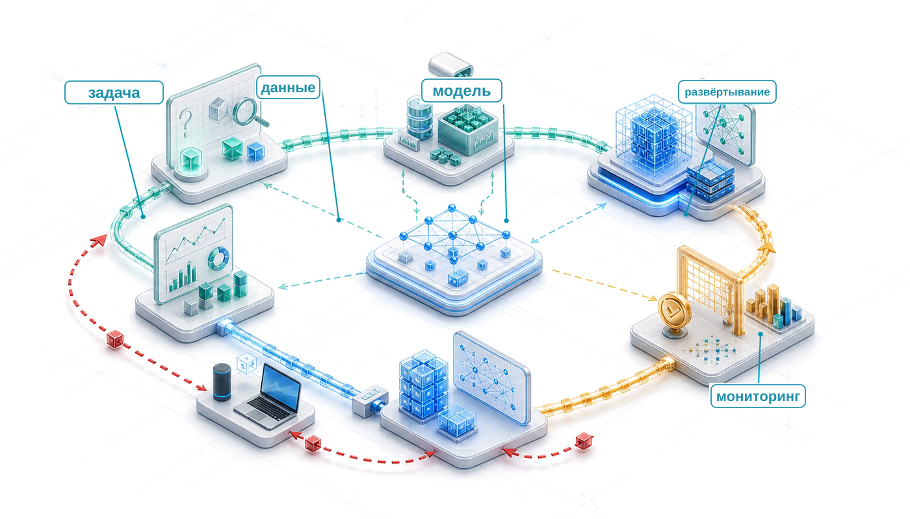
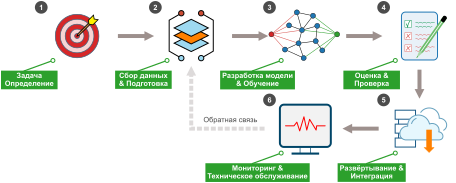
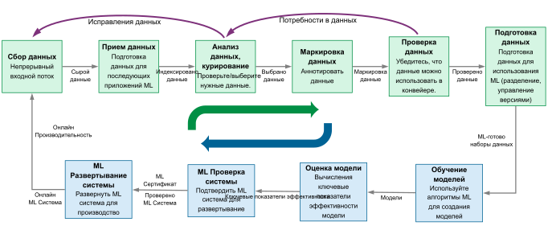
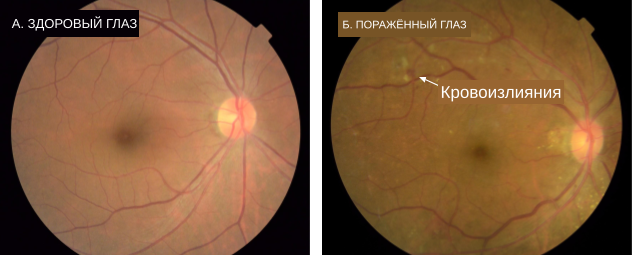
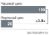
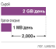
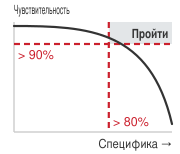
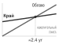
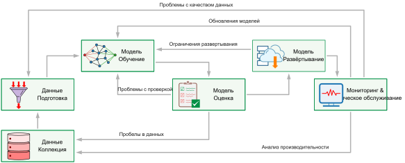
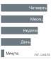

Жизненный цикл ML
Содержание главы
Содержание
- 1 Жизненный цикл как цикл
- 2 Как решения каскадируются: принцип распространения ограничений
- 3 Куда уходят часы: количественная оценка жизненного цикла МО
- 4 Принадлежность этапов и передача результатов
- 5 Этап 1: Определение проблемы
- 6 Этап 2: Сбор и подготовка данных
- 7 Этап 3: Разработка и обучение модели
- 8 Этап 4: Оценка и валидация
- 9 Этап 5: Развёртывание и интеграция
- 10 Этап 6: Мониторинг и сопровождение
- 11 Системное мышление сквозь жизненный цикл
- 12 Заблуждения и подводные камни
- 13 Итоги

Назначение
Зачем нужно видеть всю карту целиком, прежде чем идти каким-либо одним путём?
Инженерные организации часто делят ML-систему на три специальности: одна команда курирует наборы данных, вторая настраивает архитектуры моделей, третья подготавливает оборудование для обслуживания моделей. Но компоненты, которыми владеют эти команды, остаются связанными. Объём и качество собранных данных ограничивают то, какие алгоритмы применимы; вычислительная структура выбранного алгоритма определяет, какое оборудование способно исполнять его эффективно; память и пропускная способность целевого оборудования меняют то, какая предобработка может выполняться при инференсе. Оптимизация каждого элемента по отдельности часто приводит к точным моделям, которые невозможно развернуть, и к эффективным конвейерам данных, обслуживающим не те распределения, причём стоимость такого несоответствия растёт вместе с тем, насколько поздно оно проявляется. Ограничение по памяти, обнаруженное на этапе начального проектирования, меняет одну строку аппаратной спецификации; то же ограничение, обнаруженное накануне развёртывания, перечёркивает месяцы тренировочных прогонов, бюджеты разметки и интеграционную работу. Прежде чем анализировать какой-либо отдельный компонент, инженеру нужна полная карта того, как ML-система специфицируется, обучается, валидируется, развёртывается и поддерживается как единый операционный цикл. В терминах Д·А·М (данные–алгоритм–машина) жизненный цикл ML — это то место, где данные, алгоритм и машина согласованно проектируются во времени: каждая стадия передаёт ограничения остальным, пока их совокупные возможности не будут соответствовать требованиям реального мира.
Цели обучения
- Объяснить шесть стадий жизненного цикла ML как согласованные решения в связке «данные–алгоритм–машина» с обратной связью
- Сравнить ML-конвейеры с традиционным программным обеспечением, используя дрейф данных, недетерминизм и операционную обратную связь
- Построить постановку задачи, формулирующую запрос как измеримое улучшение относительно существующей базовой линии
- Проанализировать, как ограничения постановки задачи распространяются через данные, моделирование, валидацию и развёртывание
- Оценить объём переделок из-за поздно обнаруженного ограничения, проследив зависимые артефакты данных, модели, валидации и развёртывания
- Оценить компромиссы между точностью, эффективностью, воспроизводимостью и готовностью к развёртыванию на стадиях жизненного цикла
- Спроектировать контуры обратной связи, связывающие сигналы мониторинга с дообучением, сопровождением и пересмотром требований
1 Жизненный цикл как цикл
Модель, комфортно работающая на облачном ускорителе, может оказаться непригодной на низкопотребляющем устройстве в сельской клинике, а 02_system_paradigms показал, что такая смена целевой платформы развёртывания может изменить инженерные свойства той же модели на порядки. Целевая платформа развёртывания — лишь одно из решений в более длинной цепочке. Команда также должна решить, что система должна делать, собрать и подготовить данные, на которых она учится, обучить и протестировать модель, установить её там, где она будет работать, и постоянно проверять, что она продолжает работать по мере изменений окружающего мира. Остаток этой книги разбирает эту работу по частям вдоль осей данных, алгоритма и машины — от конвейеров данных и архитектур моделей до обучения, оптимизации и обслуживания моделей. Эти части не являются независимыми: каждая передаёт свои результаты следующей, и ошибка, допущенная в одной, обычно проявляется в другой. Поэтому понимание любой отдельной части требует сначала понимания того, как они связаны: последовательности стадий, через которые проходит каждая ML-система, того, что каждая стадия передаёт следующей, и того, как ограничение, обнаруженное в одном месте, достигает остальных.
Эта последовательность — жизненный цикл машинного обучения, структурированный итеративный процесс1, который направляет разработку, оценку и улучшение ML-систем (Amershi и др. 2019 г.). Пронумерованные в порядке первого появления в проекте, его шесть стадий образуют цепочку, в которой каждая стадия производит артефакт, нужный следующей. Постановка задачи (1) превращает запрос в измеримые цели и ограничения развёртывания. Они направляют сбор и подготовку данных (2), которые превращают сырые наблюдения в версионированный, валидированный набор данных. Затем разработка и обучение модели (3) подгоняет обученные веса под этот набор данных, а оценка и валидация (4) проверяет эти веса против исходных целей и фиксирует свидетельства выпуска в манифесте выпуска — неизменяемой записи того, что было протестировано и одобрено. Когда эти свидетельства поддерживают выпуск, развёртывание и интеграция (5) устанавливают одобренную модель там, где она должна работать, а мониторинг и сопровождение (6) наблюдают за работающей системой и возвращают полученные знания более ранним стадиям, замыкая контур, изображённый на Рисунок 1.

Обратная стрелка от мониторинга — именно то, что превращает жизненный цикл в цикл, а не в контрольный список. Свидетельства текут от поздних стадий к ранним, и вместе с ними должны течь ограничения. Ограничение по памяти, задаваемое устройством развёртывания, должно находиться в постановке задачи, где оно способно формировать набор данных, модель и оценку, а не в развёртывании, где оно может лишь отклонить их.
Определение 3.1: Жизненный цикл машинного обучения
Жизненный цикл машинного обучения — итеративный инженерный процесс построения, развёртывания, мониторинга и обновления ML-систем, в котором свидетельства из поздних стадий могут возвращаться к более ранним стадиям, поскольку качество работы модели может измениться после развёртывания.
- Значимость: жизненный цикл — это замкнутый контур, а не линейный конвейер. Каждая стадия передаёт следующей артефакт, от которого она зависит (цели, набор данных, обученные веса, свидетельства выпуска, работающий сервис, свидетельства мониторинга). Поэтому решение на одной стадии ограничивает каждую последующую стадию, а свидетельства из поздней стадии могут заставить пересмотреть более раннюю. То, как часто должен оборачиваться контур, само является повторяющейся статьёй бюджета, определяемой скоростью изменений среды развёртывания и временем, через которое после предсказания прибывают верифицированные метки — подтверждённые исходы, показывающие, было ли каждое предсказание верным.
- Отличие: в отличие от традиционного программного обеспечения, поведение которого меняется при изменении кода, конфигурации, зависимостей или окружения, поведение ML может меняться и при изменении мира. Точность развёрнутой модели может измениться из-за смещения распределения, даже когда код, инфраструктура и конфигурация не тронуты.
- Типичная ошибка: считать развёртывание концом жизненного цикла. Решения о дообучении зависят от свидетельств исходов, которые существуют только после развёртывания.
Перенос ограничений вокруг этого контура — задача ML-конвейера (workflow) — инженерной дисциплины, которая делает ограничения явными на каждой стадии и отслеживает, как ограничения развёртывания распространяются по данным, алгоритму и машине. Два термина делят между собой эту работу. Жизненный цикл — это что проходится, сами стадии; конвейер — это как управляется прохождение, инженерная дисциплина их оркестрации. Команда, записывающая ограничение по памяти устройства развёртывания в постановку задачи, практикует этот конвейер; команда, обнаруживающая это ограничение лишь тогда, когда готовая модель не помещается в память, работает без него. Именно эта дисциплина отличает системного инженера от исследователя моделей. Исследователь оптимизирует отдельные элементы: лучшую архитектуру, более чистый набор данных, более быстрый ускоритель. Системный инженер оркеструет эти элементы в производственные системы, надёжно приносящие ценность.
↩︎ Парадигмы развёртывания, ограничения которых по памяти, задержке (latency) и энергопотреблению распространяет конвейер, вводятся в Четыре режима развёртывания на девяти порядках величины.
На практике стадии между постановкой задачи и развёртыванием работают как два конвейера с разными ритмами. Модельный конвейер повторяется один раз за цикл «обучение–оценка», который занимает от нескольких часов до недели, тогда как конвейер данных и производственная обратная связь, которая его меняет, оборачиваются за недели или месяцы. Рисунок 2 детализирует эту работу в виде десяти более мелких блоков. Он охватывает путь от сбора данных до развёртывания и разбивает стадию 4 на блок оценки модели и блок валидации системы; его стрелки обратной связи представляют стадию мониторинга.
Верхний конвейер данных — суть стадии 2 — непрерывно превращает сырые производственные потоки через приём, курирование, разметку и валидацию в версионированные, готовые для ML наборы данных. Нижний модельный конвейер исполняет внутренний контур стадий 3 и 4 — быстрый цикл, который обучает архитектуры, вычисляет метрики оценки, валидирует системные ограничения и упаковывает одобренные артефакты для развёртывания; на рисунке манифест выпуска стадии 4 изображён как ML-сертификат. Стрелки обратной связи образуют более медленный внешний контур, который приводит в движение мониторинг. Они переносят производственную телеметрию (журналы того, что система делает в работе) и результаты валидации данных (проверки входящих данных, отличные от валидации модели на стадии 4) обратно к верхним стадиям обработки данных.

↪ Эксплуатационные инструменты и инфраструктура, автоматизирующие эти этапы жизненного цикла в масштабе, развиваются в Эксплуатация систем машинного обучения.
1.1 ML и традиционное ПО
Цикл и его два конвейера существуют из-за одного различия между ML-системами и традиционным ПО. Оба итерируют.2 Различие, которое вынуждает ввести новые механизмы управления рабочим процессом, — в том, откуда берётся поведение. Поведение программного обеспечения, основанного на правилах, меняется, когда кто-то меняет код, конфигурацию или зависимости. ML-система усваивает своё поведение из данных, поэтому это поведение может измениться и при изменении данных при неизменном коде, и только свежие размеченные исходы могут показать, отвечает ли сегодняшняя модель сегодняшним требованиям. Каждый элемент рабочего процесса, вводимый в этой главе (версионируемые наборы данных,3 статистические проверки при оценке, мониторинг дрейфа), существует для управления этим вторым путём.
↩︎ Поведение, задаваемое данными, и возможная из-за него незаметная деградация рассматриваются в Когда МЛ-системы выходят из строя незаметно.
Это различие меняет то, как взаимодействуют этапы жизненного цикла. Если в традиционной программной инженерии промышленная обратная связь служит для уточнения кода и требований, то ML-системы вводят контуры обратной связи, в которых эксплуатационные данные перестраивают обучающие распределения, обнаруженный дрейф влечёт расследование, а ошибки в рантайме вскрывают слепые зоны набора данных. Таблица 1 сопоставляет традиционную программную и ML-инженерию по шести ключевым измерениям жизненного цикла. В каждом из них эволюция данных переопределяет тестирование, развёртывание или текущее сопровождение.
| Аспект | Традиционные жизненные циклы ПО | Жизненные циклы машинного обучения |
|---|---|---|
| Определение задачи | Функциональные требования задают поведение; тесты проверяют код на их соответствие. | Цели — это статистические целевые значения, чья достижимость известна только после экспериментов на данных. |
| Процесс разработки | Инженеры пишут и изменяют логику напрямую в коде и конфигурации. | Инженеры формируют поведение опосредованно — через данные, признаки, архитектуру и запуски обучения. |
| Тестирование и валидация | Многие функциональные тесты имеют точные ожидаемые результаты; производительность и надёжность остаются количественными. | Метрики на отложенных данных, приводимые с указанием неопределённости и по подгруппам. |
| Развёртывание | Логика остаётся неизменной, пока не изменятся код, конфигурация или зависимости. | Точность может деградировать при сдвиге входных распределений, даже если код не менялся. |
| Сопровождение | Сопровождение сводится к изменению кода для исправления ошибок или добавления функциональности. | Непрерывный мониторинг, обновление конвейеров данных, переобучение моделей и адаптация к новым распределениям данных. |
| Контуры обратной связи | Промышленная обратная связь меняет код, конфигурацию и требования. | Промышленные данные могут стать будущими обучающими данными, поэтому обратная связь перестраивает и сбор данных, и модель. |
Контрольная точка 3.1: ML и традиционное ПО
ML-система — это не традиционное ПО с прикреплённой моделью. Проверьте различия, которые вынуждают вести отдельный рабочий процесс:
Каждое различие из этого сопоставления восходит к поведению, усвоенному из данных, что связывает каждый этап с соседними. Диаграмма показывает, где этапы расположены, но чтобы увидеть, насколько плотно поведение, усвоенное из данных, связывает их между собой, нужно проследить одну промышленную систему по всему циклу.
1.2 Сквозной пример: скрининг диабетической ретинопатии
Автоматизированный скрининг диабетической ретинопатии (ДР) — одной из главных предотвратимых причин потери зрения,4 — на практике выявляет эту связность этапов между собой. Хотя раннее обнаружение предотвращает тяжёлую потерю зрения, ограниченный доступ к врачам-офтальмологам в сельских регионах мотивирует программы автоматизированного скрининга. Однако обнаружение этой патологии требует распознавания тонких микроциркуляторных признаков в условиях переменных параметров съёмки. Рисунок 3 сопоставляет нормальную сетчатку (панель A) и сетчатку с диабетической ретинопатией (панель B).

Google построил одну из наиболее полно документированных программ такого рода — модель глубокого обучения, показавшую на подготовленных изображениях сетчатки уровень офтальмологов (Gulshan и др. 2016 г.) и затем развёрнутую Google Health в клиниках Таиланда (Beede и др. 2020 г.). Эта программа скрининга охватывает, следовательно, обе стороны разрыва между лабораторией и полем — разницы между отобранными изображениями, на которых разрабатывается модель, и изображениями, которые клиники снимают на самом деле, — что делает её показательным примером для прослеживания по всему жизненному циклу. Её развёртывание в тайских клиниках вскрыло эксплуатационные сложности, которых не увидела контролируемая валидация: изображения, отклонённые как непригодные для оценки, повторные снимки, добавившие работы медсёстрам, и задержки скрининга, когда медленный интернет в клинике задерживал загрузку в удалённый сервис оценки.5
Чтобы придать каждому этапу конкретные числа, наш сквозной сценарий превращает этот кейс в составную архитектуру клиники. Поскольку удалённый путь оценки зависел от интернет-соединения каждой клиники, сценарий переносит инференс в клинику. Он описывает сеть сельских клиник, каждая из которых выполняет локальный инференс на пограничном устройстве класса Orin Nano — плате с маломощным ускорителем, имеющей 4–8 ГБ общей памяти, из которых по ИТ-плану клиники около 500 МБ резервируется под модель. Каждая клиника соединяется по неустойчивому глобальному аплинку с пропускной способностью около 2 Мбит/с. Клинический мандат требует чувствительности свыше 90 процентов и результата, на котором медсестра может действовать до ухода пациента, — то есть в пределах нескольких секунд после снимка и даже при неработающем аплинке.
Чувствительность — главный показатель мандата — измеряет долю истинно больных случаев, корректно помеченных. Её знаменатель включает только пациентов с заболеванием, поэтому высокая агрегированная точность на несбалансированной, преимущественно здоровой популяции не даёт никаких гарантий, что больные пациенты будут выявлены. Специфичность измеряет долю здоровых пациентов, корректно оставленных без пометки, и ограничивает число лишних направлений, которые перегрузили бы региональных специалистов.
Команда, которая выстраивает эти этапы как линию, а не как цикл, терпит неудачу предсказуемым образом. День первый: «Постройте модель скрининга диабетической ретинопатии для сельских клиник». День 90: чувствительность 92 процента на валидационном наборе, использовавшемся для управления разработкой. День 120: чувствительность 94 процента после месяца подбора архитектуры. День 150: модель передаётся инженерам по развёртыванию. День 151: инженеры по развёртыванию сообщают, что модели для работы нужно 4 ГБ памяти. День 152: кто-то проверяет цель развёртывания — маломощное пограничное устройство в каждой клинике, чьи 4–8 ГБ памяти разделены с операционной системой, конвейером камеры и клиническим ПО; по ИТ-плану клиники около 500 МБ из них резервируется под модель. День 153: пять месяцев работы выброшены.
Точность модели была отличной. Навыки команды в машинном обучении были отличными. Отказ был отказом рабочего процесса. Ограничение развёртывания, которое должно было формировать каждое решение с первого дня, обнаружилось только после того, как работа была сделана. Бюджет в 500 МБ должен был распространиться назад до первого совещания по архитектуре, ограничивая, какие модели вообще имело смысл рассматривать. Вместо этого команда оптимизировала каждый компонент изолированно (сбор данных, выбор архитектуры, обучение), и отказ интеграции проявился лишь при сборке частей. Отказ дня 153 — один случай общего принципа о том, как ограничения распространяются через жизненный цикл.
2 Как решения каскадируются: принцип распространения ограничений
В сценарии с ДР требование «в пределах одного визита» уже исключало облачный инференс и, значит, требовало пограничного развёртывания. Бюджеты памяти и энергопотребления пограничной цели затем ограничивают архитектуру модели, отдавая предпочтение компактным моделям класса MobileNet (семейство небольших моделей изображений, созданных для телефонов и пограничных устройств) перед большими ансамблями (несколькими моделями, чьи предсказания объединяются), и требуя автоматических проверок качества изображений в момент съёмки. Каждое последующее ограничение сужает пространство проектирования для стоящих выше этапов, напрямую связывая пределы аппаратного обеспечения со сбором данных и проектированием модели.
Определение 3.2: Принцип распространения ограничений
Принцип распространения ограничений гласит, что ограничение, обнаруженное поздно в ML-жизненном цикле, может вынудить переделку по всем затронутым стоящим выше этапам. Наборы данных, обученные веса, доказательства валидации и пакеты развёртывания фиксируют решения, от которых зависит последующая работа. Исправление пропущенного ограничения требует прослеживания этих зависимостей, чтобы определить, какие артефакты должны измениться, а какие остаются валидными. Оценка реального объёма переделки требует затрат труда на пересмотр каждого затронутого артефакта, повторения зависящей от него работы и валидации итоговой системы.
- Значимость: Целевая задержка, обнаруженная при развёртывании (этап 5), например 100 ms в веб-сервисе, может распространиться назад. Она может ограничить размер модели (этап 3: число операций
), требования к набору данных (этап 2: размер набора данных , число обучающих примеров) и определение задачи (этап 1: какая точность достижима). Переделка зависит от того, какие более ранние решения опирались на пропущенное ограничение. Железный закон (Железный закон МЛ-систем) записывает полное время задачи как время перемещения данных плюс время вычислений плюс фиксированные накладные расходы. Бюджет задержки ограничивает эту сумму, а значит, и каждое слагаемое. Тем самым он ограничивает , объём перемещаемых байтов (отличный от числа примеров ) и требуемую модели эффективность аппаратного обеспечения . - Отличие: В отличие от модульной декомпозиции (которая поощряет независимую оптимизацию каждого компонента), этот принцип требует сквозного рассуждения: оптимум по точности, достигнутый в изоляции, может оказаться неосуществимой системой.
- Типичная ошибка: Считать развёртывание «последним шагом» и откладывать его ограничения по задержке, памяти и энергопотреблению до момента, когда они могут лишь отвергнуть уже готовую работу.
Для модели дня 153 это прослеживание начинается с лимита в 500 МБ и идёт назад по артефактам, построенным без его учёта. Придётся пересмотреть подготовку входных данных и архитектуру, обучить новые веса и заново провалидировать систему перед её повторной упаковкой. Разобранный график ремонта в примере 3.1 оценивает эту цепочку, причём ремонт считается отдельно от потерянной за пять месяцев работы, ушедшей в модель, которая не подходила.
Распространение ограничений действует в обоих направлениях, поэтому этапы образуют сеть ограничений, а не цепочку. Обратное распространение несёт ограничение развёртывания вверх по потоку. Когда развёртывание в сельской клинике выявляет дефицит пропускной способности канала, команда может сжимать изображения перед отправкой по восходящему каналу. Однако сжатие с потерями ухудшает качество входных данных, поэтому в обучающий набор данных должны быть включены соответствующие артефакты сжатия, иначе модель в эксплуатации будет встречать входы, отличающиеся от тех, на которых она обучалась, — это расхождение называется skew между обучением и обслуживанием (training-serving skew). Перенос инференса полностью на периферию (edge) и передача только диагностического результата, напротив, разгружает восходящий канал, но ужесточает требования к объёму памяти и энергобюджету периферийного устройства. Прямое распространение несёт раннее решение о данных вниз по потоку. Захват изображений глазного дна в разрешении, необходимом для различения мелких кровоизлияний, фиксирует размер входа модели, а вместе с ним и количество операций, которое должен оплатить каждый инференс на устройстве клиники, поскольку обработка большего входного изображения требует больше операций. Решения о данных, принятые вверх по потоку, и границы машинных этапов вниз по потоку остаются физически связанными.
Решения, принятые без учёта границ исполнения на последующих этапах, накапливают технический долг.6 Контракты интерфейсов этапов — контролируемые передачи, перечисленные в Таблица 2, — воплощают этот принцип на практике, делая ограничения явными на каждой границе этапов, так что команда обнаруживает нарушения до передачи артефакта дальше. Когда распространение происходит именно через отказы качества данных, возникающий паттерн известен как каскад данных — цепочка отказов вниз по потоку, вызванная плохими данными (Sambasivan и др. 2021 г.); её рассматривает Каскады данных. Распространение ограничений объясняет, почему позднее ограничение дорого обходится; следующий вопрос — сколько времени стоит каждый цикл и на что уходит это время.
↪ Общие контракты и пути развёртывания, отклоняющие несовместимые изменения до того, как они достигнут продакшена, закреплены в Инфраструктура разработки.
3 Куда уходят часы: количественная оценка жизненного цикла МО
Команда проекта DR потеряла пять месяцев из-за одного позднего ограничения. Концептуальные модели жизненного цикла машинного обучения описывают, какие этапы существуют, но для планирования рабочего процесса нужно знать, куда уходят его часы, а это время редко концентрируется там, где исследовательская литература тратит свои страницы.
Опросы практиков показывают разрыв между тем, где сосредоточено исследовательское внимание, и тем, где, по их собственным отчётам, они тратят время: около 79 percent специалистов по данным в опросе CrowdFlower 2016 года назвали сбор или очистку данных деятельностью, потребовавшей большей части их времени (CrowdFlower 2016 г.). В полном распределении (Рисунок 4) на уточнение алгоритмов и построение обучающих наборов вместе приходится меньше ответов, чем на один лишь сбор данных.
Опрос подтверждает один вывод: работа с данными — major времязатратный фактор для этих практиков, и этого достаточно, чтобы инженерия данных, развиваемая в 04_data_engineering, получала явное планирование, а не рассматривалась как подготовительная работа. Опрос не измеряет, как распределялись все инженерные часы, поэтому команде по-прежнему нужно самостоятельно находить своё узкое место, а не расставлять приоритеты по долям ответов. В проекте DR каждое изображение должно быть оценено несколькими офтальмологами, прежде чем оно сможет на чём-либо обучить, поэтому сбор и разметка могут задержать полезные эксперименты сильнее, чем обучение. Улучшение этого конвейера тогда может сократить время итерации раньше, чем оптимизации модели или обучения станут ограничивающим фактором.
Где бы ни концентрировались часы, скорость итераций определяет прогресс проекта. Стрелки обратной связи на Рисунок 2 (цикл Data fixes от курирования обратно к сбору, цикл Data needs от валидации обратно к курированию и путь Online Performance от производственного развёртывания обратно к сбору) — не редкие исключения; это пути, по которым команды проходят неоднократно. Дрейф клинических изображений или неверные метки возвращают команду DR к сбору, а кандидат, превышающий память устройства клиники, — к проектированию модели. Каждый цикл расходует календарное время и вычислительный бюджет, поэтому длина одного цикла ограничивает объём того, что команда может выучить.
Время, потраченное на ожидание медленных прогонов обучения или громоздких конвейеров валидации, сокращает число моделей-кандидатов, которые команда может проверить, и эта потеря есть налог на итерации. Рассмотрим две модели-кандидата для DR, разработанные за одни и те же шесть месяцев: большой ансамбль, обучаемый в облаке, с неделей на каждый прогон обучения, и лёгкая периферийная модель, обучающаяся за часы.

За те же шесть месяцев часовой цикл проверяет почти в четыре раза больше идей.
Инженерный расчёт 3.1: Налог на итерации
Математика: за шесть месяцев (~26 weeks) возможное число экспериментов составляет:
- Большая модель: 26 weeks календарного времени при 1 week на эксперимент даёт 26 экспериментов.
- Малая модель: 26 weeks календарного времени при 168 h/week даёт 4,368 возможных экспериментов по 1 hour каждый. Машинное время не ограничивает малую модель при такой длине цикла, поэтому темп команды в несколько экспериментов за рабочую неделю задаёт её счёт в 100 эффективных экспериментов.
Результат: малая модель стартует с 90 percent и достигла бы 100 percent после 100 эффективных итераций, поэтому потолок удерживает её на 99 percent. Большая модель стартует с 95 percent и достигает 98.9 percent после 26 более медленных итераций. Обе заканчивают около потолка, но команда быстрого цикла проверила 3.8× больше идей, поэтому она также узнала, какие аугментации (преобразования входа, не меняющие диагноз) и выбор предобработки имеют значение, — знание, которого команда медленного цикла так и не получила. Поскольку приросты, потолок и темп экспериментов — это допущения, расчёт демонстрирует разницу в ширине поиска, а не преимущество в точности.
Системный вывод: скорость итераций — это свойство системы. Её ценность состоит в ширине поиска, а не в гарантированном преимуществе в точности. Когда системы-кандидаты имеют сопоставимое достижимое качество, более короткие циклы расширяют объём пространства проектирования, который команда может проверить. Одна лишь скорость не может гарантировать, что меньшая модель превзойдёт большую. В сценарии скрининга DR быстрый цикл итераций лёгкой модели позволяет команде гораздо быстрее экспериментировать с аугментациями, конвейерами предобработки и вариациями архитектуры.
Поздние обнаружения умножают налог на итерации,7 потому что каждое из них возвращает команду через циклы, за которые она уже заплатила. Как установил принцип распространения ограничений (Глава 2), нарушение, выявленное лишь после развёртывания, обесценивает артефакты, произведённые более ранними этапами, а эти обесцененные артефакты требуют ещё одного прохода через переобучение, перестройку конвейера и повторную валидацию. Удержание этого налога в границах требует назначить каждому этапу ясную ответственность за свои ограничения и проверять каждый артефакт до того, как он пересечёт передачу между этапами (Глава 4.1).
4 Принадлежность этапов и передача результатов
Провал сельской клиники оплатил цену переделки в полном объёме, потому что ни один этап не отвечал за ограничение в 500 МБ памяти. Ограничение развёртывания проявилось лишь после того, как решения по подготовке данных, обучению модели и оценке уже закрепились вокруг невыполнимой цели, а предотвращение таких рассогласований требует чёткого распределения ответственности по всему технологическому стеку. Шесть этапов на Рисунок 1 разделяют ответственность за проект по осям таксономии D·A·M. Постановка задачи задаёт определяющие требования для всех трёх осей. Сбор и подготовка данных отвечают за ось Data, разработка и обучение модели управляют осью Algorithm, а развёртывание и интеграция закрепляют обе за физической машиной (Machine). Оценка и мониторинг не владеют отдельной осью; их роль — верификация: проверка того, что три оси согласованно работают перед выпуском и непрерывно в эксплуатации.
Единственный выбор модели в проекте DR затрагивает каждый этап. Постановка задачи зафиксировала бюджет модели в 500 МБ для устройства клиники, поэтому разработка модели начинается с архитектур, спроектированных для бюджетов такого рода. MobileNetV2, мобильная «маячная» рабочая нагрузка этой книги (Маяковые модели вводят «железный закон» в практику), — естественный кандидат на роль магистральной сети (сети, извлекающей визуальные признаки из каждого изображения): около 14 MB весов в FP32 и около 600 MFLOP на один инференс. Такого объёма вычислений сеть достигает заменой стандартных слоёв обработки изображений на более дешёвый вариант8, а не прореживанием более крупной модели.
Выбор MobileNetV2 немедленно накладывает ограничения на остальные этапы. Подготовка данных должна формировать изображения в разрешении съёмки, при котором мелкие кровоизлияния остаются различимыми, поскольку именно это разрешение, а не значение по умолчанию для магистральной сети, задаёт размер входа. Оценка должна измерять задержку (latency) на устройстве клиники наряду с чувствительностью. Развёртывание должно подтвердить, что веса, активации (промежуточные значения, которые каждый слой выдаёт при обработке изображения) и среда исполнения (runtime) вместе укладываются в бюджет. Если оценка на устройстве затем не достигает целевой задержки, исправление возвращается к архитектуре или входному разрешению, поэтому последовательность этапов на диаграмме проходится как цикл, а не один раз.
Контрольная точка 3.2: Цикл рабочего процесса
Убедитесь, что каждый этап соблюдает контракты, связывающие решения на верхних уровнях с физическими ограничениями развёртывания.
Каждое из этих решений этапов ложится и на слагаемое «железного закона», который измеряет время одной задачи: сеанса обучения, когда команда обучает модель, и одного скрининга, когда модель обслуживает запросы. Его мультипликативная форма D·A·M перемножает выборки на задачу, операции на выборку и секунды на операцию, а аддитивная форма суммирует перемещение данных, вычисления и фиксированные накладные расходы:
↩︎ «Железный закон систем машинного обучения» и его определяющие слагаемые вводятся в Железный закон МЛ-систем.
Системный взгляд 3.1: Этапы жизненного цикла и железный закон
- Постановка задачи: задаёт целевые ограничения по точности, задержке, стоимости, приватности и парадигме развёртывания (проверяемые по критериям приватности, задержки, вычислений и стоимости с помощью структуры принятия решений на Рисунок 11). Эти цели определяют, каким слагаемым уравнения разрешено расти, а какие должны быть ограничены с самого начала.
- Сбор и подготовка данных: формируют состав набора данных, бюджет выборок (
) и объём данных в байтах ( ), передаваемый downstream-конвейерам. Подготовка данных может также изменить объём обучения, необходимый для достижения целевого качества. - Разработка и обучение модели: определяют алгоритмическую работу на выборку (
) и суммарное число операций ( ), а также схемы повторного использования данных, перемещение параметров и достижимую эффективность оборудования ( ). - Оценка и валидация: проверяют, соответствует ли качество модели и сквозное исполнение требованиям развёртывания на целевой системе.
- Развёртывание и интеграция: определяют путь обслуживания (model serving) и реализованную скорость машины (
), включая перемещение данных в среде исполнения, эффективность исполнения и фиксированные накладные расходы ( ). - Мониторинг и сопровождение: наблюдают дрейф распределений, задержку, пропускную способность и эксплуатационную стоимость после запуска, передавая нарушения обратно на более ранние этапы для повторной оптимизации.
Взгляд на жизненный цикл через железный закон привязывает задержку и стоимость к физике оборудования. Производственные рабочие процессы должны одновременно удовлетворять ограничениям точности, безопасности, приватности и организационным ограничениям, лежащим вне уравнения.
4.1 Контракты интерфейсов этапов
Распределение ответственности по этапам на основе железного закона работает только если каждая передача результатов проверяется прежде, чем следующая команда начнёт строить на ней. Если команда данных передаёт ретинальные фрагменты
Несколько ячеек таблицы называют доказательства — например, подгруппы и процедуры отката, — которые подробнее раскрываются на последующих этапах. В эксплуатации оркестраторы конвейера — инструменты, запускающие задачи каждого этапа в заданном порядке, — обеспечивают соблюдение этих контрактов, останавливая выполнение в момент отказа любой граничной проверки (Инфраструктура разработки).
| Этап | Контракт входа | Контракт выхода | Инвариант качества |
|---|---|---|---|
| Постановка задачи | Бизнес-требования; эксплуатационный контекст | Измеримые цели; выбор парадигмы развёртывания; ресурсные ограничения | Все критерии успеха измеримы; целевая парадигма развёртывания задана явно |
| Сбор и подготовка данных | Цели; целевой объект развёртывания; требования к качеству | Версионированный набор данных со схемой; конвейер предобработки; правила валидации данных | Распределение приближается к ожидаемой производственной среде; разметка удовлетворяет требованиям к точности |
| Разработка и обучение модели | Набор данных; целевые значения точности; ресурсные ограничения | Обученные веса модели; конфигурация обучения; журналы экспериментов | Достигает порогов точности в рамках вычислительного бюджета; архитектура совместима с целевым объектом развёртывания |
| Оценка и валидация | Обученная модель; отложенные тестовые данные; критерии оценки | Метрики качества по подгруппам; анализ режимов отказа; манифест релиза | Ни одна критическая подгруппа не опускается ниже минимальных порогов; предсказанная уверенность настолько близко соответствует наблюдаемой точности, насколько этого требует предметная область |
| Развёртывание и интеграция | Валидированная модель; требования к инфраструктуре; целевые показатели соглашения об уровне обслуживания (SLA) | Точка обслуживания; инструментарий мониторинга; процедуры отката | Задержка и пропускная способность удовлетворяют требованиям парадигмы; интеграционные тесты проходят |
| Мониторинг и сопровождение | Действующая система; базовые показатели производительности; порог оповещения | Оповещения о дрейфе; критерии рассмотрения обновлений; отчёты об инцидентах | Охват оповещениями и окна обнаружения определены; обнаруженная деградация запускает рассмотрение |
Соблюдение явных контрактов превращает концептуальную петлю обратной связи на Рисунок 1 в операционный журнал аудита. Когда валидация или мониторинг выявляют дефект, граница контракта указывает, какой вышележащий этап отвечает за исправление. Каждая передача фиксировала, относительно чего артефакт был проверен, поэтому команда может вернуться к самой ранней границе, чей контракт артефакт нарушил или чей контракт вообще не оговаривал соответствующее условие. В случае модели дня 153 развёртывание обнаружило дефект, но ни одна более ранняя передача не проверяла память. Оценка измеряла чувствительность, разработка модели не получила бюджета памяти, а постановка задачи передала работу, не зафиксировав лимит в 500 МБ. Постановка задачи, таким образом, — самая ранняя граница, чей контракт не оговаривал это условие, поэтому исправление начинается там, а не на этапе развёртывания. Другие дефекты возвращаются к другим владельцам. Изображения с камеры одной клиники, отличающиеся от обучающего набора, требуют адресного сбора данных, тогда как изображения, масштабируемые в обслуживании иначе, чем при обучении, указывают на ошибку в обслуживающем конвейере. Выявление таких нарушений на границах этапов останавливает неверные допущения прежде, чем они закрепятся в виде переделок на поздних стадиях.
Пример 3.1: Аудит переходов между этапами
Диагноз: в выходном контракте отсутствуют выбор парадигмы развёртывания и ресурсные ограничения (целевые значения задержки и памяти). Если нарушение проявится только на этапе развёртывания — в виде обученной модели крупнее бюджета 500 MB для краевого устройства, — аудит должен проследить, что опиралось на отсутствующий лимит. Меньший кандидат может потребовать пересмотра входного разрешения или предобработки, новых весов, повторных тестов чувствительности и памяти на устройстве, а также замены пакета развёртывания. Существующие сырые изображения могут остаться пригодными: смена кандидата не означает повторный сбор каждого изображения.
График восстановления: Предположим, что план восстановления сохраняет исходные изображения и метки, но меняет подготовку входных данных и архитектуру кандидата. Пусть 1 day пересматривает подготовку, 2 days обучает новые веса, 2 days повторяет валидацию, а 1 day упаковывает одобренный результат. Если каждая задача ожидает предыдущий артефакт, а требуемый персонал и вычислительные ресурсы доступны, восстановление занимает 6 days. Позднее ограничение имеет две цены, и этот график учитывает лишь одну. Время восстановления — это только что оценённые дни, короткие только потому, что исходные изображения и метки сохранились и предполагается, что кандидат меньшего размера уже под рукой. Потраченная впустую работа — это та часть пяти месяцев, которая ушла на настройку модели, слишком крупной для устройства, и никакое восстановление её не вернёт.
Урок для систем: Переходы между этапами действуют как проверки качества в жизненном цикле машинного обучения. Строгая валидация контрактов на выходе перед передачей данных дальше по конвейеру предотвращает дорогую переделку на ранних этапах и гарантирует, что сбор данных соответствует целевому аппаратному обеспечению развёртывания.
Без явных проверок контрактов на каждой передаче неявные допущения распространяются дальше по конвейеру. Самая ранняя возможность ограничить их — определение проблемы (Problem Definition), которое фиксирует эксплуатационные ограничения, которым должны удовлетворять последующие этапы.
5 Этап 1: Определение проблемы
Определение проблемы в машинном обучении начинается с формулировок, обманчиво кажущихся простыми. Продакт-менеджер пишет: «Постройте модель, обнаруживающую диабетическую ретинопатию». Эта единственная фраза скрывает десяток инженерных решений: пороги чувствительности для безопасности пациентов, возможности аппаратного обеспечения в сельских клиниках, бюджеты задержки (latency), удерживающие внимание клиницистов, и нормативные рамки, регулирующие одобрение. Программные требования по-прежнему управляют потоком управления, интерфейсами и хранением данных. Машинное обучение добавляет эмпирическое обязательство. Определение того, что должна делать система, неотделимо от определения того, как она будет учиться на данных и каким физическим ограничениям должно удовлетворять её исполнение.
Запрос на модель должен сначала превратиться в требование измеримого улучшения относительно названного базового уровня — того, как работа выполняется сегодня. В случае клиники базовый уровень — это существующий процесс скрининга и направления к специалистам, оцениваемый по тем результатам и ограничениям ресурсов, которые предлагаемая система должна улучшить. Сформулированный относительно этого базового уровня, запрос становится проверяемым требованием, например: находить больше подлежащей направлению патологии, чем текущий путь направления, при объёме направлений, который региональные специалисты способны принять, измеренном на пациентах самих клиник. Сценарий задаёт нижние границы: более 90 процентов чувствительности и более 80 процентов специфичности. Эти границы переводят сравнение в числа лишь в том случае, если команда выводит их из него. Нижняя граница чувствительности должна лежать выше доли патологии, находимой текущим путём, а нижняя граница специфичности должна удерживать объём направлений на уровне, который специалисты способны принять, — иначе их выполнение ничего не говорит о том, получают ли клиники пользу. «Постройте модель» не называет никакого такого сравнения, поэтому не даёт критерия успеха.
Более простое правило или существующая модель могут, где уместно, служить дополнительной точкой сравнения. Сравнение должно учитывать налог на сложность, установленный в Четыре предварительные проверки при выборе уровня, — стоимость инфраструктуры, мониторинга и сопровождения, которую добавляет обучаемая система; обучаемая система оправдывает себя лишь тогда, когда ценность избегаемых ею ошибок превышает эту стоимость. Если доступные данные не позволяют провести требуемую оценку или ожидаемая выгода не оправдывает добавленных затрат, команде следует пересмотреть постановку задачи или сохранить базовый уровень, а не переходить к обучению автоматически.
Балансирование клинических, аппаратных и регуляторных требований, скрытых в этой однофразовой заявке, требует рассуждения по всему технологическому стеку системы. Инженерная команда не может оптимизировать точность изолированно: погоня за маргинальными приростами чувствительности за счёт увеличения глубины модели или перехода к более крупному семейству моделей наращивает число параметров и вычислительные требования (FLOPs на инференс), напрямую сталкиваясь с ограничениями ёмкости памяти и теплового бюджета дешёвого клинического железа. И наоборот, прореживание (pruning) модели (удаление весов, вносящих наименьший вклад) ради укладки в бюджет DRAM встроенного ускорителя рисует уронить чувствительность ниже порогов клинической безопасности. Поэтому каждое техническое решение в определении проблемы действует как задача многокритериальной оптимизации с ограничениями, в которой целевые показатели точности и пределы развёртывания ограничивают друг друга с первого дня.
5.1 Слои ограничений
Скрининговая модель, достигающая 95 процентов чувствительности в облачном ноутбуке, всё равно проваливает эту оптимизацию, если ей нужно 4 ГБ ОЗУ на клиническом устройстве со свободными 500 МБ, или если персонал клиники не может проверить, почему она пометила пациента. Чтобы сделать все эти пределы явными до начала сбора данных, определение проблемы раскладывает требования на три взаимодействующих слоя ограничений: статистический, физический и эксплуатационный. Это не изолированные контрольные списки: слои образуют связанный стек, где предел в одном ярусе сужает выбор в остальных.
На вершине стека статистический слой задаёт целевое поведение на распределениях данных — например, достижение
Эксплуатационный слой несёт физические последствия, с которыми традиционная программная инженерия редко сталкивается. В традиционной базе данных удаление записи пациента — это оператор DELETE. В МЛ-системе веса модели могут кодировать статистические закономерности, извлечённые из этой записи. Если закон или регулятор требует устранить это влияние, соответствие может потребовать машинного «забывания» (machine unlearning) (Cao и Yang 2015 г.; Bourtoule и др. 2021 г.) — методов, удаляющих влияние записи из обученных весов с неполными гарантиями, — либо переобучения на оставшихся данных. Команда должна, следовательно, закладывать вычислительные ресурсы на переобучение и фиксировать, какие записи пациентов участвовали в обучении каждой выпущенной модели.
↪ Почему удаление влияния записи из обученных весов остаётся обязательством соответствия, раскрывается в Ответственный инжиниринг.
Принцип распространения ограничений (Глава 2) объясняет, почему все три слоя должны быть ограничены до начала разработки. Ограничение, существующее в физической или эксплуатационной среде, но не зафиксированное в определении проблемы, не исчезает. Оно проявляется позднее как нарушение архитектуры после того, как зависимые решения уже затвердели. Например, если инженерная команда определяет целевую функцию исключительно как агрегированную точность классификации на изображениях сетчатки, стандартная оптимизация будет минимизировать средние потери на обучении (показатель ошибки, который обучение снижает), где доминирует мажоритарный класс. В несбалансированной скрининговой популяции, где 90 процентов пациентов здоровы, модель, предсказывающая «нет болезни», достигает 90 процентов агрегированной точности, проваливая каждого пациента, нуждающегося в срочной помощи. Поскольку обучение преследует только заданную ему метрику, метрика, расходящаяся с целью, губит систему до первого прогона обучения. Предотвратить это позволяет перевод доменного инварианта (пропущенный диагноз стоит намного дороже ложного направления) в явный статистический контракт: функцию потерь, взвешивающую каждый пропущенный случай тяжелее ложного направления, нижнюю границу чувствительности и целевые показатели по подгруппам.
Практический случай 3.1: Когда меткой была предвзятость (2018)
Механизм: Поскольку прежний найм был ориентирован на мужчин, модель усвоила, что язык с мужскими маркерами коррелирует с успехом найма, систематически штрафуя термины вроде «women’s» и понижая выпускниц двух чисто женских колледжей.
Влияние: Модель воспроизвела историческую предвзятость найма, сделав автоматический скрининг резюме непригодным для продакшн-рекрутинга.
Исправление: Amazon отказался от экспериментального инструмента после того, как попытки удалить явные гендерные признаки не смогли гарантировать, что модель не выучит иные дискриминационные прокси.
Урок для систем: Определение проблемы должно фиксировать критерии справедливости, проверяемости и отклонения до сбора данных и обучения. Конвейер, обученный на предвзятых метках, не усваивает эксплуатационную цель; он усваивает воспроизведение этих меток.
5.2 Определения проблемы эволюционируют
Когда скрининговая программа по ДР расширяется с одной пилотной клиники с откалиброванной фундус-камерой до десятков региональных медицинских центров с другими марками камер и популяциями пациентов,9 её исходные допущения рушатся. Профили шума сенсоров расходятся, оптические разрешения меняются, демографические сдвиги изменяют частоты ошибок по подгруппам. Поэтому определение проблемы — не статичная спецификация, замороженная в начале проекта; оно должно эволюционировать по мере расширения развёртывания, пополняясь целевыми показателями точности по подгруппам и более широкими проверками совместимости аппаратного обеспечения. Как такие требования подгрупп и управления специфицируются, тестируются и сопровождаются, раскрывается в Ответственный инжиниринг.
Эта эволюция напрямую следует из того, как учатся МЛ-системы. Масштабирование выявляет редкие входные данные, отсутствовавшие в пилотных оценках, а производственная среда сдвигает распределение входа так, как не способен полностью охватить ни один статичный офлайн-датасет. Разумное определение проблемы предвосхищает этот дрейф, задавая правила управления заранее. Эти правила определяют, какие сигналы мониторинга запускают формальную повторную оценку, и ограничивают, как обновления порогов распространяются по последующим этапам конвейера. Когда эти эксплуатационные ограничения и границы производительности определены на бумаге, конвейер должен закрепить их в физических артефактах, начиная с конвейеров сбора данных, собирающих распределение для обучения.
6 Этап 2: Сбор и подготовка данных
На бумаге определение проблемы требует 90 процентов чувствительности в сельских клиниках; в поле эта цель немедленно сталкивается с испачканными объективами камер, отсутствующими записями пациентов и клиническим интернет-каналом в 2 Мбит/с. Переход от определения проблемы к сбору данных — это момент, где абстрактные целевые показатели точности встречаются с этими физическими реалиями. Этот этап определяет размер датасета
Ограничения развёртывания, установленные при определении проблемы, становятся техническими требованиями к данным. Если модель должна работать на периферийных устройствах, конвейер сбора должен производить входные данные, совместимые с периферийной предобработкой; если она должна достигать 90 процентов чувствительности на разнообразных популяциях, датасет должен достаточно сэмплировать эти подгруппы, чтобы поддержать обучение модели.
Для скрининга диабетической ретинопатии эти требования к данным диктуют стратегию сбора куда более строгую, чем стандартные бенчмарки компьютерного зрения. Конвейер должен собрать порядка
Сбор этих изображений также нагружает инфраструктуру клиники: каждая фундус-фотография занимает несколько мегабайт, а клинические протоколы снимают несколько ракурсов на пациента. Загруженное сельское учреждение генерирует гигабайты сырых данных визуализации в день — объём, который перегрузил бы нестабильный аплинк в 2 Мбит/с в рабочие часы. Поэтому обучающая выборка не может поступать как поток всех снимков в реальном времени. Она начинается как начальная курируемая корпус оцениванных изображений, а поздние пополнения передаются как сэмплированные изображения, отправляемые в нерабочие часы. После развёртывания скринера рутинный трафик сокращается ещё сильнее. Вместо насыщения ограниченной широкополосной пропускной способности сырыми загрузками развёрнутая система может исполнять инференс локально на периферийном ускорителе и передавать лишь компактную периферийную сводку — структурированную запись, содержащую диагностическую классификацию и клинические метаданные. Локальный инференс снижает трафик аплинка с десятков мегабайт до килобайт на пациента.

Периферийные сводки сокращают дневной восходящий трафик клиники примерно в 2,000 раз.
Инженерный расчёт 3.2: Пропускная способность против вычислений
Математика:
- Дневной объём данных: при 100 patients/day, 4 photos/patient и 5 MB/photo клиника производит 2 GB/day.
- Время загрузки: восходящий канал — 2 Mb/s, или 0.25 MB/s. Деление 2,000 MB на эту скорость даёт 8,000 s, то есть приблизительно 2.2 h.
- Ограничение: если клиника требует загрузки в ту же смену в течение своего рабочего окна 8 h, одна эта передача занимает канал в течение 27.8 percent этого окна и может конкурировать с другим трафиком.
Системный вывод: в удачный день загрузка сырых снимков укладывается в смену, но занимает большую долю канала, а в день сбоя канала не происходит вовсе. Результат скрининга, который должен быть доступен медсестре во время визита, следовательно, не может зависеть от восходящего канала — это аргумент в пользу локального инференса. Передача периферийных сводок обнаружений (10 KB/patient) вместо изображений также сокращает восходящий трафик в 2,000× раз. Ночная отправка изображений батчами для обучения остаётся возможной и здесь не сравнивается.
Инференс на месте, в клинике (расчёт на салфетке 3.2) применяет инвариант локальности данных (определение 2.3) к восходящему каналу клиники. Инвариант исключает любой удалённый путь, при котором одна лишь сетевая передача превышает предельный срок. Это делает практичной аппаратуру вроде ускорителей семейства NVIDIA Jetson10, хотя она вносит аппаратный компромисс между использованием меньшей модели, укладывающейся в низкопотребляющий периферийный бюджет, и оснащением более производительными локальными устройствами по более высокой цене. Ограничение пропускной способности превращает этот выбор инфраструктуры в решение о сборе данных, а не в позднюю деталь реализации. Архитектура сценария объединяет периферийные устройства для локального инференса и предобработки, агрегирующие серверы клиники для управления данными и буферизации и облачную инфраструктуру обучения для периодических обновлений модели. Она нацелена на получение результата в течение секунд после съёмки и на работу, не зависящую от сетевой связности.
Ограничения приватности порождают аналогичное архитектурное решение. Нормативные требования к приватности пациентов могут мотивировать локальное хранение или распределённое обучение, но обычно они предписывают меры защиты и допустимые способы использования, а не одну обязательную топологию обучения. Рабочие процессы, которые хранят сырые данные клиники локально, передавая лишь одобренные обновления или сводки, усложняют и сбор данных, и инфраструктуру обучения модели.
6.1 Разрыв между лабораторными и полевыми данными
Где бы ни хранились данные, модель не может быть лучше того, что снимает камера каждой клиники. Когда система скрининга DR от Google перешла с отобранных бенчмарк-изображений на клиники Таиланда (Beede и др. 2020 г.), изображения поступали с разнообразного камерного оборудования, обслуживаемого персоналом с разным уровнем подготовки, часто при неоптимальном освещении и нестандартном позиционировании пациента (Глава 1.2). Это расхождение между контролируемыми датасетами разработки и реальными входными данными — разрыв между лабораторией и полем, введённый со сквозным кейсом. Модель, обученная исключительно на резких, хорошо освещённых снимках со стандартизированных исследовательских камер, может давать сбои на размытых или тёмных кадрах со старой клинической аппаратуры — не потому, что алгоритм неверен, а потому, что распределение входных данных сместилось за пределы обучающего охвата. Точность на отобранном тестовом наборе, следовательно, не демонстрирует готовности к клинике, и валидация должна сэмплировать эти полевые условия до релиза (Глава 8.3). Устранение этого разрыва в масштабе многих клиник — проблема инфраструктуры не меньше, чем моделирования.
6.2 Распределённая инфраструктура данных
Если развёртывание растёт от нескольких клиник до сотен, инфраструктура данных становится распределённой системой, чей проект следует из ограничений, зафиксированных при постановке задачи. Связность определяет передачу. Учреждения с надёжным широкополосным доступом могут транслировать диагностические сводки почти в реальном времени, тогда как клиники с нестабильными спутниковыми каналами требуют архитектур store-and-forward, которые буферизуют данные локально и синхронизируются в оппортунистическом режиме в окнах связности. Этот выбор распространяется на весь физический стек: клиникам store-and-forward нужны большие локальные буферы хранения, периферийный инференс, работающий без сети, и способ сверять локальные предварительные классификации с последующим централизованным просмотром. Размещение хранилищ имеет значение и на центральном конце, поскольку обучающие данные, валидационные данные и регуляторный архив читаются с очень разной интенсивностью.
↪ Стоимость и пропускная способность каждого уровня хранения, а также почему МЛ-системы их комбинируют, измеряются в Уровни хранения и стоимость.
Неоднородность данных растёт вместе с объёмом байт. Различающаяся оптика камер, неравномерное освещение в клиниках и разный уровень подготовки операторов дают каждой клинике собственное распределение входных данных, поэтому каждая клиника действует как отдельный источник данных.11 Следовательно, датасет, который этот этап передаёт дальше, должен содержать метаданные происхождения, фиксирующие модель камеры, параметры съёмки и идентификатор оператора для каждого снимка. Именно эта цепочка происхождения изолирует специфичный для площадки регресс точности и проходит регуляторный аудит. Неоднородность также довод в пользу валидации в точке съёмки: неверно откалиброванная камера, обнаруженная лишь недели спустя во время центрального запус обучения, уже потратила впустую хранилище, вычисления и возможности наблюдения за пациентами.
6.3 Обеспечение качества и валидация
Размытый снимок сетчатки, прошедший мимо проверок качества, не просто занимает место в хранилище. Если такие изображения попадают в обучение с ненадёжными метками или часто появляются в эксплуатации, они искажают статистические свидетельства, доступные модели, и ухудшают клиническую безопасность. Обеспечение качества гарантирует, что входящие данные удовлетворяют инвариантам, от которых зависят последующие этапы. В сценарии диабетической ретинопатии автоматизированные модели оценки качества, развёрнутые у фундус-камеры, немедленно помечают не в фокусе или неправильно скадрированные кадры, побуждая клинический персонал переснять фотографию, пока пациент ещё присутствует, а не обнаруживать дефект недели спустя при обучении модели.
↪ Каскады данных, в которых неперехваченные дефекты сбора наслаиваются в отказы последующего обучения и оценки, разобраны в Каскады данных.
Валидация выходит за пределы качества изображений и проверяет корректность разметки, связывания с пациентами и соответствия требованиям приватности. Локальная валидация перехватывает проблемы съёмки на месте, тогда как централизованная выявляет распределённые аномалии по всей сети клиник — например, помечая случаи, когда изображения конкретной площадки смещены к узкому демографическому диапазону, способному внести смещение в обучающий набор. Вместе с ранее заданными на этом этапе ограничениями пропускной способности и приватности эти проверки качества определяют, какие данные содержатся в обучающем наборе и какие вариации от клиники к клинике должна выдерживать модель. Однако даже тщательно отобранный, валидированный датасет всё ещё может оставить следующий этап голодным, если он не может поступать в обучение с той же скоростью, с какой обучение его потребляет.
6.4 Порядок примеров и скорость доставки
Обучение многократно читает датасет DR — порядка
↪ Как обучение перекрывает доставку данных с вычислениями, чтобы ускоритель не простаивал, разобрано в Предзагрузка данных и перекрытие.
Таким образом, сбор данных не заканчивается с началом обучения. Обратная связь от оценки и эксплуатации постоянно корректирует, что собирается, а проверка доставки продолжает подтверждать, что данные поступают так же быстро, как обучение их потребляет. Построение конвейеров сбора и доставки — предмет 04_data_engineering, а решение о том, какие собранные примеры заслуживают вычислений обучения, — предмет Отбор данных. Этот этап передаёт дальше версионируемый датасет, его конвейер предобработки и измеренную скорость доставки, которые вместе становятся сырым материалом, из которого разработка модели делает обученные модели.
7 Этап 3: Разработка и обучение модели
У команды по ДР имеется порядка
В терминах железного закона этот этап определяет слагаемое операций
Обучение backbone для компьютерного зрения со случайных весов на конечных медицинских данных редко достигает точности уровня специалиста в пределах практически приемлемого бюджета вычислений. Перенос обучения (transfer learning)13 снимает это ограничение: за основу берётся backbone, предобученный на большом общем корпусе изображений — например, на обучающей подвыборке ImageNet Large Scale Visual Recognition Challenge (ILSVRC) 2012 из 1.3 million размеченных изображений (Russakovsky и др. 2015 г.), — и адаптируется к задаче по сетчатке. Старт от этих выученных визуальных признаков позволяет обучению на изображениях сетчатки достигать хорошей точности за меньшее число шагов обучения и лучше обобщать, чем старт со случайных весов. Величина выигрыша зависит от того, насколько сильно исходные изображения похожи на целевые, какие слои переиспользуются и как продолжается оптимизация после переноса (Yosinski и др. 2014 г.).
В контролируемом валидационном исследовании Google (Gulshan и др. 2016 г.) перенос обучения и размеченный датасет из 128 000 изображений дали AUC14 0,99 при чувствительности 97,5 процента и специфичности 93,4 процента в одной рабочей точке. Этот результат демонстрирует потенциал предобучения на общих изображениях с последующим дообучением на изображениях сетчатки в условиях исследования; сам по себе он не устанавливает эксплуатационных характеристик для развёртывания. Достижение результата такого рода требует многократных запусков обучения по всему размеченному датасету, и арифметическая стоимость каждого запуска на доступном оборудовании определяет, сколько запусков может позволить себе команда, — это та же «налоговая плата за итерации» в очередной форме.
Достижение высокой статистической точности на бенчмарк-данных — лишь первый барьер, поскольку развёртывание на edge-устройствах требует, чтобы модели укладывались в строгие лимиты памяти, исполнялись в тесных рамках задержки (latency) и оставались в пределах тепловых ограничений. Ансамблевое обучение наиболее остро сталкивает максимальную точность с соответствием целям развёртывания. Объединение предсказаний нескольких моделей регулярно даёт лучшую бенчмарк-точность, однако вычисления на инференсе, хранение параметров и трафик памяти растут прямо пропорционально размеру ансамбля. Последовательное исполнение увеличивает задержку, а параллельное требует дополнительной аппаратной многопоточности, поэтому из размера ансамбля самого по себе не следует никакого фиксированного множителя задержки.
Исторический конкурс Netflix Prize показал, как сложность ансамбля может заблокировать развёртывание. Побеждающее решение давало наивысшую предсказательную точность, но Netflix так и не развернул его, потому что эксплуатационные расходы на поддержку и обслуживание ансамбля превысили предельную бизнес-ценность (Johnston 2012 г.). Даже ансамбль из лёгких моделей умножает сложность оркестрации, рабочую память и операционный мониторинг, так что каждое архитектурное решение создаёт системные «волны» далее по цепочке, накапливающиеся на физической границе развёртывания.
7.1 Точность против эффективности
Уложиться в эту границу развёртывания, не пожертвовав клинической безопасностью, — центральный компромисс разработки модели. Поскольку пропуск активного случая ДР грозит необратимой потерей зрения, а ошибочная классификация здорового глаза приводит лишь к ненужному направлению на обследование, обучение должно оптимизировать специализированные клинические цели15, а не обобщённую среднюю ошибку, поддерживая чувствительность
↪ Вероятностные выходы и кросс-энтропийные функции потерь, которые оптимизируют стандартные классификаторы, разбираются в Кросс-энтропия и функции потерь для классификации.
В то же время архитектура, преодолевающая эти клинические пороги, должна исполняться в пределах физической рамки развёртывания. В данном сценарии запуск модели должен строго оставаться в резервации 500 МБ памяти на общем для клиники edge-устройстве с 4–8 ГБ. Этот бюджет должен вмещать статические параметры весов наряду с входными буферами, активациями и накладными расходами исполнения среды. Одновременно ускоритель должен работать в пределах лимита энергопотребления класса Orin Nano (7–15 W) и возвращать каждый предсказание в течение секунд.
Балансирование этих давлений памяти, энергопотребления и задержки требует навигации по компромиссам железного закона. Для одного инференса команде необходимо сократить перемещаемые байты
↪ Пересмотр точности против рамок памяти и задержки посредством систематического прореживания (pruning), квантизации и дистилляции разбирается в Вписывание в бюджет развёртывания.
Модель, которую производит обучение, — это, таким образом, кандидат, но ещё не модель, которая пойдёт в эксплуатацию. Подгонка её под устройство клиники — самостоятельная инженерная работа, и она действует на все три части системы. Со стороны данных вычисления обучения направляются на те примеры, которые учат модель больше всего (Отбор данных). Со стороны алгоритмов обученная модель делается меньше и дешевле в исполнении (Сжатие моделей). Со стороны машины её операции отображаются на ускоритель так, чтобы на практике приближаться к пиковой производительности аппаратуры (Аппаратное ускорение). Каждое изменение затем измеряется против бюджетов, зафиксированных определением задачи (Бенчмаркинг). Ни один из этих шагов нельзя компенсировать обучением более точной модели, потому что точность и соответствие ограничениям — отдельные свойства, которые конвейер работы должен устанавливать по отдельности.
7.2 Разработка, управляемая ограничениями
ML-инженер, понизивший разрешение изображений сетчатки до стандартных
Даже когда знания предметной области сузили пространство кандидатов, каждый оставшийся вариант модели, набор параметров обучения и выбор предобработки добавляют запуски обучения, поэтому исчерпывающее экспериментирование быстро становится дорогим. Эта экономическая реальность мотивирует вложения в планирование запусков, чтобы ускорители не простаивали, в переиспользование промежуточных результатов вместо их пересчёта и в остановку запусков, явно не улучшающихся. Систематический перебор параметров обучения при дисциплинированном дизайне экспериментов сокращает вычисления по сравнению с исчерпывающим поиском.
Эта экспериментальная дисциплина существенна, потому что обучение ML стохастично, и без контролируемых сравнений команда может потратить бюджет итераций на погоню за межзапусковым шумом. Поэтому команды контролируют переменные через фиксированные случайные зёрна и версии окружения. Они проводят систематические абляционные исследования17 для выделения вклада отдельных компонентов и контролируют смешивающие факторы, чтобы отделить эффекты архитектуры от эффектов оптимизации — например, убедиться, что новый backbone не выглядит лучше лишь потому, что его скорость обучения настраивалась аккуратнее, чем у базовой линии.
Команды также проверяют статистическую значимость по нескольким запускам обучения, используя парные офлайн-тесты, сравнивающие две модели на одних и тех же отложенных изображениях, — в отличие от A/B-тестирования18, зарезервированного для сравнения моделей на живом производственном трафике. Без этой строгости команды не могут отличить действительные улучшения качества от статистического шума — различие, становящееся критическим, когда модель находится вблизи клинического порога чувствительности. Поскольку чувствительность вычисляется только по пациентам, у которых действительно есть заболевание, тестовый набор скрининга, доминируемый здоровыми глазами, может содержать слишком мало подтверждённых положительных случаев, чтобы надёжно зафиксировать эту долю. Поэтому тестовый набор должен содержать достаточно таких случаев, чтобы чувствительность выше порога оставалась выше него с учётом неопределённости выборки.
↪ Сколько тестовых примеров нужно измеренному различию, чтобы ему можно было доверять, разбирается в Статистические и методологические проблемы.
Проверка и статистической значимости, и соответствия edge-устройству на каждом этапе удерживает исследование согласованным с целями развёртывания, а не с лабораторными условиями, но поддержание такой строгости в растущей команде быстро перерастает индивидуальные скрипты и ноутбуки.
7.3 От прототипа к производству
Небольшая команда специалистов по данным часто может координировать ранние исследовательские запуски с помощью подручных скриптов, таблиц и общих ноутбуков. Однако по мере превращения проекта из прототипа в производственную систему сложность растёт сразу по нескольким направлениям. Датасеты растут, модели требуют распределённого обучения по кластерам ускорителей, а несколько инженеров запускают параллельные запуски. В этих условиях неформальная координация быстро превращается в узкое место разработки. Без общей инфраструктуры члены команды невольно обучаются на конфликтующих разбиениях данных, дублируют дорогие проходы предобработки на отдельных машинах, перезаписывают общие контрольные точки (checkpoint) моделей и с трудом сводят расходящиеся версии ноутбуков. В команде по ДР два инженера, разбившие градированные изображения по-разному, получили бы каждую свою чувствительность, невоспроизводимую для другого. Время, требуемое на распутывание конфликтующих артефактов и незарегистрированных конфигураций, начинает доминировать в разработке.
Общие платформы рабочих процессов устраняют трение такой координации за счёт стандартизации интерфейсов этапов и централизации управления ресурсами. Вместо опоры на ручные передачи задач и несогласованные скрипты общая платформа предоставляет всей команде одни и те же разбиения данных и одни и те же предобработанные данные, планирует ускорители между задачами и фиксирует, какой код и какая конфигурация дали каждый результат. Работа в масштабе, следовательно, требует от команд систематически сохранять входные данные каждого эксперимента, программные зависимости и конфигурацию исполнения, устанавливая базовую основу, необходимую для проверки подлинных улучшений.
7.4 Воспроизводимость и системные артефакты
Общая инфраструктура ускоряет эксперименты, только если её результатам можно доверять. Если во вторник кандидатная модель обходит валидационную базовую линию на целый процентный пункт, но повторный запуск того же обучающего скрипта в четверг не даёт такого результата, команда не может определить, был ли выигрыш подлинным или случайностью планирования потоков и незаписанных версий библиотек. Воспроизводимость — способность восстановить результат и ограничить его вариацию от запуска к запуску — именно то, что позволяет команде отличить подлинное улучшение от шума. Её отсутствие — экономическая цена наряду с научной: команда, не способная воспроизвести результат, перезапускает эксперименты, которые могут не сойтись к тому же исходу, и каждый невоспроизводимый результат увеличивает технический долг системы.19
↪ Технический долг, накапливающийся, когда эксперименты и артефакты остаются без учёта, и практики его сдерживания рассматриваются в Технический долг.
Воспроизведение ML-результатов требует отслеживать версии данных, случайные зерна, конфигурации оборудования и версии библиотек наряду с логикой программы, поскольку само оборудование вносит вариацию от запуска к запуску. Когда параллельные потоки ускорителя суммируют частичные результаты во время обучения, порядок поступления частичных сумм может различаться от запуска к запуску, а сложение чисел с плавающей точкой не ассоциативно (
Следовательно, запись одного лишь случайного зерна не обеспечивает воспроизводимость: важны также конфигурация исполнения и измеренная вариация между повторными запусками — требование, которое Воспроизводимость распространяет на отчёты по бенчмаркам. Систематическое отслеживание экспериментов записывает уникальные идентификаторы запусков и связывает версии данных, коммиты кода, гиперпараметры и результирующие модели, чтобы команда могла восстановить, что изменилось между двумя запусками.
Отслеживанию экспериментов нужна чётко определённая единица версионирования, и такой единицей служит фактический результат этапа. Распространённая ошибка — считать обученные веса модели единственным выходом разработки модели. В зрелом ML-процессе результатом является воспроизводимый системный артефакт, чей инференс-пакет состоит из четырёх компонентов:
- Веса модели: обученные параметры.
- Код инференса: точный код, используемый для запуска модели, включая логику предобработки.
- Спецификация окружения: полный граф зависимостей (например, образ контейнера,
requirements.txtи драйверы ускорителя), необходимый для исполнения кода. - Конфигурация: гиперпараметры и настройки среды исполнения.
Воспроизведение инференса и пересборка обученного кандидата требуют разных доказательств. Наряду с инференс-пакетом артефакт должен быть связан с версией набора данных, версией обучающего кода, рецептом предобработки, конфигурацией обучения и средой исполнения, которые дали эти веса. Согласно принципу «данные как код» («Принцип data-as-code»), трактующему обучающие данные как исходный код системы, изменённый обучающий набор меняет выученное поведение столь же неотвратимо, как и изменённый код инференса. Такая прослеживаемость делает процедуру обучения повторяемой; однако описанный ранее недетерминизм по-прежнему требует проверки вариации между запусками, а не обещания идентичных весов.
Окружение входит в пакет потому, что несоответствия зависимостей не всегда завершаются громким сбоем. Неподдерживаемый драйвер или отсутствующая библиотека мгновенно останавливает процесс обслуживания, тогда как другая библиотека линейной алгебры или иная процедура изменения размера изображений может изменить результаты вычислений с плавающей точкой или пиксельную интерполяцию без какого-либо падения, смещая выходы модели и точность. Модель, достигшая целевого показателя чувствительности в разработке, должна быть переоценена, если меняется её производственное окружение, даже когда инференс завершается без исключений. Упаковка воспроизводимого артефакта всё ещё подтверждает лишь то, что кандидат стабильно работает в собранном виде; следующий этап проверяет, выдержит ли он те клинические условия, с которыми реально столкнётся.
8 Этап 4: Оценка и валидация
Предположим, что упакованный кандидатный артефакт команды по диабетической ретинопатии совпадает с AUC 0,99 исследования на отобранных исследовательских данных. Затем команда проверяет его на снимках из сельской клиники, где медсестра с двухнедельной подготовкой работает с пятилетней фотокамерой для съёмки глазного дна, — и чувствительность оказывается значительно ниже целевого уровня в 90 процентов. Программа исполняется, не выбрасывая исключения и не возвращая кода ошибки; выученные признаки модели просто сталкиваются с распределениями пикселей, искажёнными оптическим размытием, низкой освещённостью и переменным расширением зрачка, которые никогда не встречались в обучающем распределении. Высокая точность на отобранных тестовых разбиениях не гарантирует эксплуатационной надёжности в производстве. Перед развёртыванием воспроизводимый кандидатный артефакт должен пройти систематические проверки оценки и валидации, которые подтверждают точность, задержку (latency) и устойчивость в реалистичных условиях эксплуатации, превращая повторяемую сборку в утверждённый релиз.
Определение 3.3: Валидация модели
Валидация модели — это основанная на доказательствах проверка, определяющая, пригодна ли обученная модель к развёртыванию для конкретного применения. Она проверяет модель на соответствие ограничениям развёртывания — целевым показателям задержки, целевым показателям по подгруппам, бюджетам стоимости и устойчивости к сдвигу распределения, — но не может подтвердить безопасность при всех возможных условиях.
- Значимость: валидация добавляет измерения, которые игнорирует точность на тестовом наборе. Модель, достигающая 95 процентов точности на статическом тестовом наборе, может не уложиться в целевую задержку — например, 100 ms в веб-сервисе — на самых медленных запросах. Она может не достичь требуемого порога по подгруппе, например максимального разрыва производительности в пять процентных пунктов между демографическими группами. Она также может потерять более десяти процентных пунктов точности при распространённых проблемах качества изображений, таких как размытие и блики. Каждая непроверенная размерность — риск развёртывания, который молча накапливается в производстве.
- Различие: оценка измеряет поведение модели с использованием выбранных наборов данных, метрик и экспериментов, которые могут включать тесты на вне-распределённых данных и по подгруппам. Валидация собирает более широкие доказательства, необходимые для конкретного решения о развёртывании, включая задержку системы, пропускную способность, устойчивость, операционную готовность и стоимость.
- Типичная ошибка: трактовать валидацию как «ещё один тест». Модель может пройти тест на точность и всё же провалить валидацию по задержке, надёжности на подгруппах или стоимости.
Оценка поставляет измерения; валидация использует их, чтобы решить, соответствует ли интегрированный программно-аппаратный конвейер намеченным требованиям развёртывания. Слово валидация в практике ML обозначает несколько разных вещей. Валидационный набор — это разбиение данных, используемое для выбора модели. Валидация данных — это проверка входящих данных, выполняемая на этапе 2. Валидация модели — это решение о выпуске, принимаемое на данном этапе, а блок валидации системы на Рисунок 2 — это её проверка интегрированного конвейера. Это решение шире любой оценки на валидационном наборе. Отдельный тестовый набор поставляет доказательства после завершения выбора модели; повторное использование его для выбора модели ослабляет его независимость. Точность на отложенных примерах составляет лишь часть доказательств выпуска — наряду с проверками исполнения, устойчивости и операционной готовности. Пороги метрик, контролируемый производственный опыт, стресс-тесты окружения и любая требуемая регуляторная квалификация закрывают взаимодополняющие риски, причём доказательства и последовательность определяются целевым применением. Методология измерений, стоящая за этими проверками, раскрывается в Бенчмаркинг.
8.1 Метрики и пороги оценки
Обученный классификатор выдаёт непрерывную вероятностную оценку для каждой сетчатки, но клиническому процессу нужно бинарное решение о направлении к специалисту, удовлетворяющее минимальным требованиям

Прокручивание порога очерчивает одну иллюстративную кривую; она должна достигнуть угла, где выполняются оба минимальных требования.
Даже в разбиении на чувствительность и специфичность общие числа могут скрывать локальные провалы. Стратифицированная оценка разбивает тестовый набор по возрастным группам пациентов, хроническим заболеваниям и моделям камер клиник, чтобы проверить, сохраняется ли точность в каждой подгруппе. Модель ДР с общей чувствительностью 94 процентов может опуститься ниже 80 процентов на снимках пациентов с катарактой или при слабом освещении в клинике. Эти локальные провалы остаются скрытыми в общих средних и проявляются только как пропущенные диагнозы после запуска — если только автоматизированная оценка не проверяет каждый срез подгруппы перед продвижением кандидатной контрольной точки.
Помимо точности по меткам, оценка должна измерять калибровку вероятностей:20 то, насколько предсказанная мера уверенности модели соответствует частоте, с которой она действительно права. Современные глубокие модели часто плохо откалиброваны, сообщая высокую уверенность (
↪ Как измеряется калибровка и какие методы рекалибровки её улучшают, рассматривается в Калибровка уверенности.
8.2 Офлайн- и онлайн-оценка
Прохождение проверок чувствительности, подгрупп и калибровки на статическом тестовом разбиении устанавливает предсказательное поведение, но не проверяет условия работающего сервиса. Живые запросы приходят пачками, каждый запрос и результат должны быть сериализованы в байты для передачи, а логирование телеметрии добавляет собственные накладные расходы. Офлайн-нагрузочные тесты и воспроизведение (replay) могут выявить такие узкие места, когда они воспроизводят соответствующие условия; живой трафик поставляет дополнительные доказательства о развёрнутом окружении. Поэтому валидация движется от статических офлайн-разбиений к контролируемому производственному опыту.
Для централизованного сервиса онлайн-оценка распространяет валидацию на живой трафик посредством поэтапного развёртывания (staged rollout).21 Поэтапное развёртывание предъявляет кандидата живому трафику шагами — в отличие от паттерна межуровневого сжатия, называемого прогрессивным развёртыванием в Разделение работы по уровням: три паттерна интеграции. В теневом режиме (shadow mode) кандидат получает живые запросы, но его предсказания только логируются; канарейка возвращает свои предсказания небольшой доле трафика; A/B-тест делит трафик между кандидатом и базовой линией для сравнения исходов. Каждый шаг добавляет доказательство своего рода (Таблица 3).
↪ Теневые и канареечные релизы, производственная форма этого поэтапного развёртывания, рассматриваются вместе с переключением blue-green в Развёртывание модели.
| Этап валидации | Типичное добавляемое доказательство |
|---|---|
| Офлайн-оценка | Алгоритмическое поведение |
| Теневой режим | Интеграционное поведение |
| Канареечное развёртывание | Поведение при ограниченном трафике |
| A/B-тестирование | Сравнительные исходы |
Эти поэтапные проверки должны также выполняться там, где работает модель. В сценарии ДР прерывистая связь и локальное исполнение переносят их на устройства клиник и пилотные площадки, где команда сравнивает кандидата с записанными входами клиник, а затем внедряет утверждённое обновление в небольшой группе клиник. Каждый шаг сохраняет свои требования к доказательствам и свой лимит exposure — долю пациентского трафика, которую может обслуживать кандидат. A/B-разделение пациентов между моделями обычно считается клиническим исследованием и требует этической экспертизы.
8.3 Валидация в производственных условиях
Если этапы развёртывания в Глава 8.2 ограничивают долю живого трафика, которую кандидат видит на каждом шаге, то валидация в производственных условиях определяет, какие реальные нагрузки те офлайн- и пилотные проверки должны отработать до расширения exposure. Из-за разрыва между лабораторией и полем (Глава 6.1) модель, оценённая на чистых отложенных снимках одной клиники, мало что говорит о других камерах, условиях съёмки и популяциях пациентов, заданных при определении проблемы. Поэтому валидация должна сэмплировать полевые условия по трём измерениям: неоднородность площадок, возмущения на уровне входов и временной дрейф.
Внешняя и мультиплатформенная валидация проверяет, выучила ли модель обобщаемые признаки заболевания или просто запомнила особенности камер больницы-разработчика. В скрининге сетчатки чувствительность сенсоров, покрытия линз и цвет вспышки различаются у разных производителей камер. Модель ДР, обученная исключительно на снимках с высококлассных камер глазного дна в исследовательских больницах, может дать сбой при развёртывании в поликлиниках со старым оборудованием. Поэтому мультиплатформенная валидация прогоняет бенчмарки кандидатных моделей на данных, собранных на независимых клинических площадках с разными камерами, условиями освещения и уровнем опыта операторов.
Тестирование устойчивости смещает фокус на отдельные запросы инференса, проверяя, как модель справляется с реалистичными дефектами изображений и краевыми случаями. Для конвейеров компьютерного зрения к таким дефектам относятся шум сенсора, оптическое размытие, неравномерный контраст и частичные перекрытия зрачка. Как и в тайских клиниках сквозного примера, тусклое освещение помещения и нерасширенные зрачки дают изображения, которые система отклоняет как непригодные для оценки. Проверка моделей как на синтетических, так и на реальных деградированных изображениях показывает, требуется ли обслуживающему конвейеру вышестоящая проверка качества изображений, отклоняющая непригодные кадры до траты тактов ускорителя на инференс.
Временна́я валидация проверяет, сохраняет ли модель свою точность по мере изменения клинической среды на протяжении недель и месяцев. Тестовые наборы, взятые из одного исторического окна, не замечают более поздних сдвигов в демографии пациентов, распространённости заболеваний или порядке направление пациентов в клинику. Когда распределение входных данных меняется, а связь между входами и метками остаётся прежней, система сталкивается с ковариативным сдвигом (covariate shift) (Quiñonero-Candela и др. 2009 г.); когда сама связь между входными признаками и клиническими диагнозами меняется, возникает концептуальный дрейф (concept drift) (Gama и др. 2014 г.). И то и другое может вызвать тихую деградацию модели и мотивирует описанные в Глава 10 непрерывные конвейеры телеметрии и обнаружения дрейфа.
↪ Статистические тесты, обнаруживающие ковариативный сдвиг и концептуальный дрейф в продакшене, разработаны в Обнаружение дрейфа данных и реакция на него.
8.4 Регуляторная валидация
Прохождение мультиузловых тестов, тестов на устойчивость и временных стресс-тестов показывает, как модель ведёт себя на деградированных входных данных, но в высокоответственной области, такой как здравоохранение, валидация должна также доказать, что система безопасно отказывает в состоянии неопределённости. Для скрининга диабетической ретинопатии клинические валидационные исследования запускают автоматизированную систему параллельно с лицензированными офтальмологами, сравнивая классификации модели с эталонной истиной (ground truth), установленной консилиумами специалистов. Системы, которые отказывают безопасно, направляя неоднозначные или низкоуверенные изображения человеческим специалистам, встраиваются в клиническую помощь, тогда как системы, которые отказывают незаметно, порождают пропущенные диагнозы, которые никто не замечает, пока пациенты не теряют зрение. Когда требуется предпродажная проверка Управлением по контролю за продуктами и лекарствами США (FDA), эти доменно-специфичные доказательства безопасности и эффективности также должны соответствовать устройству и его регуляторному пути.22
Валидация факторов человека (human factors) проверяет, как модель вписывается в повседневные решения персонала клиники. Даже точная модель будет отключена или обойдена, если её интерфейс сбивает медсестёр с толку или замедляет приём пациентов, поэтому валидация должна измерять, как персонал и система работают вместе, наряду со статистической точностью.
8.5 Готовность к развёртыванию
Прохождение валидации создаёт неизменяемый манифест релиза, фиксирующий доказательства и одобрение для конкретной версии модели, назначенного применения и условий эксплуатации. Этот манифест записывает точный хеш контрольной точки модели, конфигурацию контейнера предобработки, параметры калибровки, результаты бенчмарков по выделенным демографическим и аппаратным срезам, а также любые требуемые регуляторные разрешения. Манифест связывает релиз с этими доказательствами; сам по себе он не предоставляет внешнего разрешения и не устанавливает эффективность за пределами оценённых условий. Если модель не проходит установленный порог — например, p99 задержки обслуживания (задержка, ниже которой остаются 99 процентов запросов) превышает бюджет соглашения об уровне обслуживания (SLA), или чувствительность на низкоосвещённых изображениях глазного дна опускается ниже порога безопасности, — релиз удерживается и развёртывание останавливается. Диагностика затем направляется назад на ответственный этап жизненного цикла: инженерию данных для целевого сбора данных, обучение модели для перебалансировки функции потерь в пользу пропущенных случаев или оптимизацию среды исполнения для снижения стоимости выполнения.
Эти доказательства и одобрение относятся к одной конкретной конфигурации системы, поэтому развёртывание должно установить и поддерживать именно эту конфигурацию в каждой клинике, включая её процедуры предобработки, скомпилированную модель, сборщики телеметрии и триггеры отката. Проверки развёртывания подтверждают, что установленного пути обслуживания соответствует оценённым условиям и что локальная интеграция не сделала недействительными доказательства релиза.
9 Этап 5: Развёртывание и интеграция
Одобренный манифест релиза удостоверяет, что конфигурация модели прошла валидацию, но манифест — это ещё не работающий клинический сервис. В сценарии DR развёртывание должно установить скомпилированную модель на краевые устройства класса Orin Nano в сельских клиниках с нестабильной связью, подключить среду исполнения к больничным информационным системам с различными требованиями к схемам и вернуть прогнозы, на основе которых клиницисты могут действовать до ухода пациента. На устройстве клиники путь обслуживания должен сначала уложиться в резервирование 500 МБ памяти — обязательное условие, которому должен удовлетворять каждый кандидат. Задержка затем не является ограничивающим лимитом, поскольку сценарий предполагает, что инференс на устройстве занимает значительно меньше секунды на изображение (прикидочный расчёт 3.3), с комфортом укладываясь в бюджет порядка секунд. Выделенная инфраструктура обслуживания управляет этими компромиссами под живым трафиком; подробно она рассматривается в Обслуживание моделей.
9.1 Требования к развёртыванию
Закрепление этого пути обслуживания в сети из 500 клиник превращает бюджеты памяти, задержки, нагрева и пропускной способности каждого устройства в инфраструктурное решение уровня всего парка. В сценарии клинического скрининга осуществимость определяет выбор между централизованным облачным обслуживанием и локальными вычислениями на границе сети до оценки стоимости, поскольку целевая задержка в рамках приёма и автономная работа, зафиксированные на этапе определения проблемы, уже исключают обращение в облако. Стоимость служит лишь проверкой. Прикидочный расчёт 3.3 применяет сопоставление капитальных расходов и регулярных операционных расходов из Компромиссы и ограничения облачного ML в масштабе сети, чтобы подтвердить, что осуществимый вариант ещё и окупается.
Инженерный расчёт 3.3: Экономика облачного и периферийного развёртывания
Вариант A: облачный инференс.
- Модель работает на централизованных GPU-серверах
- Стоимость инференса: ~$0.01/image (время облачного GPU + накладные расходы API)
- Годовая стоимость инференса в 500 клиниках, 50 patients/day, 1 оплачиваемое изображение на пациента, 365 days/year, и $0.01/image составляет $91,250/year
- Плюс: предполагаемая аллокация затрат на связность и сетевые операции для отправки 5 MB на одно оплачиваемое изображение = ~$45,000/year
- Итого: ~$136,250/year операционных расходов
- Риск: отправка одного изображения размером 5 MB через uplink клиники 2 Mb/s одна занимает около 20 s, не считая 200 ms+ удалённой обработки, что далеко выходит за целевую задержку сценария; сбои связности останавливают скрининг
Вариант B: развёртывание на устройстве клиники (edge).
- Разовые затраты на оборудование: один $500/device на клинику в 500 клиниках требует $250,000 капитальных расходов
- Стоимость инференса: ~$0.001/image (предполагаемая полная переменная операционная аллокация)
- Годовая стоимость: примерно $25,000/year на обслуживание плюс примерно $9,125/year переменных затрат на инференс, итого около $34,125/year
- Итого: $250,000 авансом + ~$34,125/year
- Выгода: задержка ниже 50 ms; работает офлайн; значительно более низкая стоимость инференса
Расчёт:
- Годовая экономия: $136,250/year (облако) − $34,125/year (edge) = $102,125/year
- Срок окупаемости: $250,000 (оборудование) ÷ $102,125/year = ~2.4 years
Системный вывод: при данных допущениях сценария развёртывание на границе сети окупается за ~2.4 years и позволяет выполнять инференс во время сбоев связности, однако требует более плотной оптимизации модели (необходимо уложиться в память краевого устройства) и более сложных конвейеров обновления. Парадигма развёртывания, выбранная на этапе определения проблемы, определяет, жизнеспособен ли вообще краевой вариант.

Edge дороже на старте, но текущие расходы облака обгоняют его примерно за 2.4 years.
Когда краевое оборудование установлено в клинике, интеграция с хостом распространяет эти физические бюджеты на программные интерфейсы существующей клинической инфраструктуры, где среда исполнения инференса обменивается данными с больничными информационными системами (HIS), чтобы получать записи пациентов и записывать диагностические результаты. Поскольку оценки предсказаний не дают автоматически надёжных оценок неопределённости, их интерпретация должна быть оценена на репрезентативных данных до того, как интерфейсный контракт начнёт использовать их для маршрутизации решений. Этот контракт определяет, какие классификации запускают автоматические направления к специалистам, а какие требуют проверки врачом, включая обработку отклонённых или низкокачественных входных данных, поэтому порог уверенности нельзя оценивать в отрыве от downstream-процесса, который он запускает.
Правила приватности также определяют, что происходит с данными после развёртывания. Законы о защите данных могут запрещать хранить производственные входные данные, связывать их с идентификаторами пациентов или использовать для дообучения. Если клиника не может сохранять сырые входные данные, непрерывное улучшение не может полагаться на их журналирование, поэтому правила приватности ограничивают, как модель может поддерживаться (Эксплуатация систем машинного обучения).
9.2 От пилота до полного развёртывания
Даже после выполнения требований к оборудованию каждой клиники, контракту с HIS и правилам приватности доставка новой скрининговой модели сразу в 500 клиник превратила бы любую необнаруженную несовместимость камер или ошибку схемы в общесетевой сбой. Поэтому производственное развёртывание идёт поэтапно, чтобы сдерживать сбои по мере расширения среды. Сначала офлайн-проигрывание и синтетические тестовые обвязки проверяют контракты схем и лимиты конкурентности без риска для безопасности пациентов. Затем пилотные развёртывания в нескольких клиниках подвергают обслуживающий стек реальным условиям, отсутствующим в лабораторных бенчмарках: оптические искажения разных моделей камер, сенсорный шум при неравномерном освещении клиники и различия в том, как персонал располагает пациентов. Полномасштабное развёртывание расширяет охват редкими анатомическими вариациями и редкими патологиями. Обнаружение этих сдвигов требует непрерывного мониторинга среды исполнения, а не предположения, что валидационные распределения будут действовать вечно.
Масштабирование на сотни удалённых клиник приносит разнообразие оборудования и жёсткие сетевые лимиты по всему парку. Различия в оптике локальных камер сдвигают пиксельные распределения ещё до начала инференса, что требует проверок входных данных на устройстве, отклоняющих несоответствующие спецификации снимки на месте. В то же время узкая пропускная способность глобальной сети исключает непрерывные обновления весов или потоковую передачу высокоразрешающей телеметрии в центральный кластер. Вместо этого краевые устройства клиник должны работать самостоятельно, журналируя метрики локально и синхронизируя состояние в назначенные окна обслуживания.
Чтобы скринер оставался клинически безопасным, нужны калиброванные оценки неопределённости, а не только высокая средняя точность. Когда модель встречает пограничную сетчатку, возврат некалиброванной оценки рискует пропущенным диагнозом. Вместо этого путь обслуживания использует маршрутизацию с участием человека (human-in-the-loop routing), применяя калиброванные пороги уверенности для отправки пограничных случаев врачам-специалистам-офтальмологам. Такая маршрутизация защищает пациентов в реальном времени и также создаёт стабильный поток высокоценных обучающих примеров. Оценённые специалистами пограничные случаи предоставляют верифицированные метки, которые возвращаются в последующие прогоны обучения, нацеливаясь на самые сложные случаи модели.
Поддержание согласованности сотен клинических устройств требует версионированных, неизменяемых пакетов моделей, которые каждая клиника устанавливает целиком или никак, — практика релизов, развитая в Развёртывание Edge AI. Развёртывание отмечает переход от статической офлайн-оценки к непрерывным операциям, где телеметрия проверяет, удерживаются ли реальные задержка и предсказания в рамках одобренных границ.
10 Этап 6: Мониторинг и сопровождение
Рассмотрим иллюстративный случай: прошло шесть месяцев с момента запуска системы скрининга диабетической ретинопатии. Клиника обновляет свои фундус-камеры, и новое оборудование создаёт изображения с иными цветовыми профилями. Код не менялся, однако распределения пикселей, которые модель выучила во время обучения, больше не соответствуют поступающим изображениям, и в этом сценарии чувствительность модели на данной площадке падает. Уравнение деградации из Когда МЛ-системы выходят из строя незаметно (Уравнение (1)) моделирует точность после развёртывания как начальную точность минус подогнанный коэффициент
Команда мониторинга не видит потери точности. Она видит лишь замену камер и изменившиеся цвета, потому что в журналах обслуживания ничто не фиксирует чувствительность, а потеря остаётся неподтверждённой до поступления размеченных исходов. МЛ-системы могут деградировать из-за дрейфа данных даже тогда, когда их артефакты остаются нетронутыми.
Тихая деградация означает, что развёртывание — не конец жизненного цикла; оно запускает продолжительную эксплуатационную фазу. Мониторинг предоставляет статистическую телеметрию для обнаружения деградации, а конвейеры непрерывного сопровождения обновляют модели, когда на то есть достаточные основания. Инфраструктура, обеспечивающая эту фазу в производственной среде, разрабатывается в Эксплуатация систем машинного обучения.
В этом иллюстративном сценарии мониторинг отслеживает показатели по всем клиникам, чтобы обнаруживать, влияет ли на точность изменение демографии пациентов, технологии камер или деградация оборудования. Решения об обновлении направляют три контура обратной связи: данные о производительности могут мотивировать целевой сбор данных, результаты проверки качества данных — изменения в подготовке данных, а подтверждённая деградация модели — дообучение или иное вмешательство. Поскольку в штатном режиме клиники загружают только диагностические сводки, этим контурам нужен собственный канал данных: выборочный набор изображений, отправляемый в часы наименьшей нагрузки и размечаемый централизованно, поставляет данные об исходах и материалы для дообучения, которых не могут дать сводки. Пороги дрейфа инициируют проверку; они не выбирают средство автоматически. Целевой сбор данных, изменения в подготовке и дообучение считаются сопровождением, тогда как добавление новой модальности визуализации, например оптической когерентной томографии, было бы изменением продукта, требующим новых данных, валидации, интеграции в рабочий процесс и, при необходимости, регуляторной проверки.
↪ Метрики расхождения и соглашения о порогах для измерения дрейфа распределений собраны для справки в Измерение дрейфа.
10.1 Производственный мониторинг
Обновление камер в клинике, сдвигающее цветовые профили изображений, или площадка, где устаревшее оборудование и когорты пациентов с преобладанием катаракты снижают точность, обнажают слепые зоны на разрыве между лабораторией и полевой эксплуатацией (Глава 6.1).23 Когда это происходит, ни технические команды, отслеживающие состояние системы, ни клинический персонал, полагающийся на направления, не могут ждать месяцы экспертной разметки, чтобы узнать, что входные данные изменились. Поэтому инфраструктура мониторинга — это предпосылка развёртывания, а не дополнение после запуска: она сочетает быстрые эксплуатационные и статистические сигналы с отложенными оценками исходов, чтобы её выводы могли направлять целевой сбор данных и пересмотр модели.
Чтобы преодолеть задержку между немедленным клиническим трафиком и медленно поступающей разметкой «земной истины», нужны количественные пороги для задержки, точности и стабильности распределения данных. Лёгкие статистические тесты, сравнивающие производственные распределения входных данных с данными разработки24, фиксируют сдвиги входов по мере их возникновения, запуская реакции — от автоматических оповещений до проверок на предмет дообучения — пока накапливаются размеченные данные о производительности.
↪ Конвейеры обнаружения дрейфа, прогоняющие эти тесты против обучающих базовых линий в производственной среде, разрабатываются в Мониторинг распределений признаков.
Производственная система скрининга диабетической ретинопатии может отслеживать четыре категории метрик на разных временных масштабах. Следующие пороги иллюстрируют одну политику сценария; клинические и эксплуатационные команды должны валидировать их для конкретного продукта, популяции и среды развёртывания.
- Метрики производительности модели (требуют «земной истины», доступны с задержкой): чувствительность (цель выше 90 percent, оповещение, если скользящее среднее — объединённое по площадкам, пока не накопится достаточно подтверждённых случаев, — опускается ниже 88 percent). Специфичность (цель выше 80 percent, оповещение при падении ниже 78 percent). Производительность подгрупп (оповещение, если какая-либо демографическая группа отстаёт от базовой линии более чем на 5 процентных пунктов).
- Прокси-метрики (доступны немедленно, без «земной истины»): распределение уверенности предсказаний (оповещение, если средняя уверенность падает более чем на 10 процентов относительно базовой линии). Частота направлений (оповещение при изменении частоты более чем на 15 процентов от базовой линии). Доля отбраковки изображений по качеству (оповещение, если более 20 процентов изображений не проходят проверки качества).
- Эксплуатационные метрики: задержка инференса (p95 ниже 50 ms, оповещение при превышении 100 ms), что согласуется с устройственным временем менее секунды в данном сценарии; пропускная способность (оповещение, если глубина очереди превышает 50 изображений); и частота ошибок (оповещение, если более 0,1 процента запросов завершаются неудачей).
- Метрики стабильности данных: распределения признаков и предсказаний сравниваются с базовой линией, с оповещениями, когда недавний трафик выходит за ожидаемый диапазон.
Цели и оповещения запускают разные реакции. Измеренный пропуск целевого показателя приёмки открывает проверку затронутой площадки и версии системы. Пересечение одного из отображаемых порогов оповещения, которые лежат дальше от цели, переводит эту проверку в разряд срочных. Ни один из порогов сам по себе не выбирает дообучение. Иерархия важна, потому что эксплуатационные метрики выявляют немедленные проблемы, прокси-метрики сигнализируют о возможных проблемах модели без «земной истины», а размеченные данные о производительности поступают позже.
Для случая обновления камер немедленное оповещение о сдвиге цветового распределения даёт сигнал и идентификатор площадки, но до поступления репрезентативной разметки команда располагает свидетельством изменившихся входных данных, а не измеренной потери чувствительности, и применяет ранее утверждённые пределы экспозиции или альтернативный скрининговый рабочий процесс. Одних только проверенных направлений недостаточно для получения такой разметки, поскольку политика маршрутизации отправляет специалисту только помеченные или пограничные случаи. Пациенты, которых модель сочла здоровыми, в штатной помощи никогда не проходят экспертную разметку, поэтому пропущенные среди них случаи заболевания остаются невидимыми, если команда дополнительно не размечает выборку ненаправленных изображений. Каким бы ни оказалось средство — восстановление валидированной конфигурации камер или возврат к сбору данных и разработке модели, — исправление вновь входит в жизненный цикл на этапе, ответственном за дефект. Оно покидает его только после прохождения тех же проверок выпуска, с пересмотренным манифестом выпуска, перед контролируемым развёртыванием.
Этот путь возврата и есть петля жизненного цикла, в которой каждое производственное наблюдение имеет ответственный этап и проверку, которую нужно пройти заново. Запуск этой петли в производственной среде — отдельная дисциплина: эксплуатационный контур, который обнаруживает, диагностирует, принимает решения, выпускает и восстанавливается. Его порядок работы с инцидентами, от классификации серьёзности до постмортема, разрабатывается в Реагирование на инциденты в ML-системах, а Структура решения о переобучении взвешивает дообучение против его вычислительной стоимости и стоимости валидации.
10.2 Сопровождение в масштабе
Эксплуатация этого контура обновлений в сотнях клиник вместо единственной пилотной площадки порождает проблему координации в масштабе парка: кандидат на обновление, улучшающий агрегированную чувствительность, всё ещё может вызвать регрессию в конкретной клинике, где оптика камер или демография пациентов отличаются от средних по сети. Для регулируемого устройства, такого как скринер диабетической ретинопатии, поэтапные развёртывания любого одобренного обновления должны следовать заранее определённому плану контроля изменений (изменениям модели, заранее одобренным регуляторами), а механизмы отката25 ограничивают ущерб, когда выпуск ведёт себя некорректно. В этом масштабе мониторинг должен отслеживать глобальные метрики и поведение отдельных площадок совместно, а также поддерживать происхождение данных — цепочку метаданных, связывающую производственные журналы с данными, кодом и версиями моделей. Происхождение данных позволяет команде связать падение точности на конкретной площадке с обучающим экспериментом и версией данных, стоящими за ним, вместо реконструкции этой связи вручную методами криминалистического анализа; регуляторы могут требовать этого в обязательном порядке.
Соотнесение производственных данных о неисправностях с их причинами отправляет работу вверх по течению. Рисунок 5 отображает эти пути возврата по этапам 2–6, рисуя сбор и подготовку данных отдельными блоками и опуская определение проблемы, которое лежит выше по течению каждого показанного пути. В развёртывании скрининга диабетической ретинопатии, когда оценка модели обнаруживает падение точности на старых фундус-камерах, путь Data gaps запускает целевой сбор изображений именно из этих клиник. Аналогично, когда валидация по когортам пациентов выявляет более низкую чувствительность у пациентов с катарактой, путь Validation Issues мотивирует дообучение с синтетическими аугментациями помутнения хрусталика. В производственной среде телеметрия времени исполнения направляется по путям Data Quality Issues и Performance Insights обратно в подготовку и сбор данных всякий раз, когда обновления оборудования в клиниках меняют вид изображений.

Проактивное сопровождение замыкает цикл жизненного цикла. Операционные сигналы выявляют потенциальные проблемы, анализ определяет, требуется ли новая проверенная разметка или иное изменение, а производственные данные возвращаются обратно для уточнения постановок задач, стандартов качества данных и архитектурных решений. Когда выбрано дообучение (fine-tuning), плановые или запускаемые по доказательствам конвейеры могут включить согласованные данные и вернуть кандидата на валидацию. С замкнутым контуром связанность между этапами перестаёт быть задачей этапа проектирования и становится свойством работающей системы, причём последствия этой связанности не раскрывают метрики ни одного отдельного этапа.
11 Системное мышление сквозь жизненный цикл
Кейс с обновлением камеры, открывший этап мониторинга, затронул все этапы одновременно. Изменение оборудования съёмки в одной клинике сдвинуло распределение входных данных, ухудшило модель, прошедшую валидацию, и потребовало маршрутизации доказательств обратно через жизненный цикл для выявления и валидации исправления. Весь разбор случая с ДР показал ту же связанность: ограничения пропускной способности, задержки (latency) и связи говорили в пользу развёртывания на периферии (edge), развёртывание на периферии ограничивало размер модели, а размер модели перестраивал предобработку.
Объяснение подобной связанной динамики требует системного мышления — подхода, анализирующего, как части системы взаимосвязаны, а не рассматривающего их изолированно. Три структурных механизма объясняют большую часть такой взаимосвязанности. Первый — обратное распространение ограничений (Глава 2) — проявлялся на каждой передаче между этапами с момента своего определения. Многоуровневая обратная связь задаёт каждому обратному пути от мониторинга к более ранним этапам собственное время отклика — от поминутных проверок до квартальных обзоров, — а эмерджентное поведение объясняет сбои, которые не видны ни одному отдельному этапу или площадке. Управление всеми тремя механизмами отличает проактивное проектирование системы на основе ограничений от реактивной отладки после развёртывания.
11.1 Многоуровневая обратная связь
Неверно настроенная камера в клинике видна в течение минут, тогда как демографический сдвиг, требующий расширения обучающих данных, надёжно устанавливается лишь за месяцы работы специалистов-разметчиков, поэтому МЛ-система не может исполнять все свои циклы обратной связи по одним часам. Один иллюстративный эксплуатационный план для сценария с ДР использует поминутные проверки, чтобы поймать неверно настроенную камеру до того, как она произведёт объём непригодных изображений, сравнимый с целым сдвигом. Он добавляет ежедневные обзоры прокси-сдвигов — доли направлений, доверия, доли отклонений или специфичных для площадки изменений камер. Еженедельная агрегация размеченной статистики точности и тестов на дрейф применяется, когда доступна эталонная разметка. Ежемесячный анализ исследует покрытие популяции, а квартальный обзор проверяет, отвечает ли архитектура клиническим потребностям. Фактические ритмы зависят от задержки разметки, риска продукта, трафика и стоимости реакции на каждый сигнал.

Циклы мониторинга охватывают от минут до кварталов — пять порядков величины.
Каждый ритм соответствует тому, сколько времени требуется сигналу, чтобы стать доверительным, и насколько дорого исполнять его исправление. Реакция на краткосрочную дисперсию медленным ритмом вызывает «метание» конвейера — например, дообучение модели из-за переходного однодневного всплеска направлений, — тогда как слишком медленная реакция на устойчивый сдвиг позволяет продолжаться скрытой деградации точности. Однако разделение обратной связи по временны́м масштабам всё же оставляет пространственное слепое пятно — когда сбой слишком редок на любой отдельной клинике или этапе, чтобы вызвать локальную тревогу.
11.2 Эмерджентное поведение
В развёртывании ДР на многих площадках каждая отдельная клиника может сообщать устойчивую общую точность, в то время как общесетевой анализ вскрывает резкое падение чувствительности для конкретной возрастной группы, которую ни одна клиника не видит достаточно часто, чтобы заметить самостоятельно. Сложные системы порождают эмерджентные поведения такого рода, невидимые при изолированной проверке компонентов или площадок. Сетевые таймауты и сбои из-за нехватки памяти обнаруживают некоторые сбои напрямую, но ни традиционные, ни МЛ-системы не могут полагаться на исключения, чтобы раскрыть каждый вредный исход. Мониторинг МЛ должен также исследовать дрейф данных, дрейф концепций и усиление смещения, поскольку прогнозное качество может снижаться, не порождая трассировок стека или исключений среды исполнения, — и даже продолжая обслуживать запросы в пределах SLA по задержке.
Контрольная точка 3.3: Замыкание петли обратной связи
Примените реакцию мониторинга к иному источнику неопределённости.
В ходе мониторинга клиника сообщает об изменившейся доле направлений для пациентов старше семидесяти лет. Задержка и доля отклонений по качеству изображения остаются стабильными. Разметка доступна только для направленных пациентов, и манифест выпуска не содержит отдельной оценки чувствительности для этой возрастной группы. Требования предполагаемого применения включают этих пациентов, но план оценки упустил подгруппу.
Вместе распространение ограничений через границы этапов, многоуровневое согласование обратной связи по времени и эмерджентное поведение показывают, что МЛ-системы нельзя спроектировать одним лишь модульным разложением, а команды, применяющие традиционные программные допущения к этой связанной динамике, терпят неудачу предсказуемым образом.
12 Заблуждения и подводные камни
Отношение к машинному обучению как к обычному программному обеспечению порождает предсказуемые сбои, каждый из которых восходит к определённому разделу этой главы. Перечисленные ниже заблуждения повторяются, когда команды управляют статистическими моделями с допущениями, унаследованными от детерминированного кода приложений.
Заблуждение: Разработка МЛ может следовать традиционным программным процессам без изменений.
Такие практики, как контроль версий, модульное тестирование и итеративная поставка, остаются необходимыми. Системы машинного обучения также выводят поведение из данных, поэтому эти практики должны охватывать наборы данных, обученные артефакты и доказательства статистической эффективности (Таблица 1). В МЛ-процессе постановки задач эволюционируют по мере того, как исследовательское обучение вскрывает пробелы в распределениях, дисбалансы классов или неосуществимые компромиссы «точность—задержка», а практики называют подготовку данных крупным поглотителем времени (Глава 3).
Подводный камень: Считать подготовку данных одноразовым шагом предобработки.
Команды часто трактуют очистку данных и проектирование признаков как статическую веху, которую нужно пройти до начала обучения. В производстве входные распределения эволюционируют непрерывно: меняется поведение пользователей, деградируют датчики, изменяются вышестоящие схемы. Двухконвейерный жизненный цикл из Рисунок 2 отражает эту операционную реальность: верхний конвейер данных и нижний конвейер модели исполняются конкурентно и подают результаты друг в друга. Ранние решения по подготовке данных каскадно проходят через обучение и развёртывание (Глава 6). Когда подготовка данных статична, скрытые сдвиги распределений и рассогласование признаков между обучением и обслуживанием (training-serving feature skew) обходят тесты на уровне кода, ухудшая точность инференса задолго до появления операционной тревоги. Непрерывные конвейеры валидации данных с автоматической проверкой схем и мониторингом распределений необходимы, чтобы ловить дрейф данных на этапе приёма, а не после скрытого сбоя модели в производстве.
Заблуждение: Прохождение оценки модели означает, что система готова к развёртыванию.
Офлайн-оценка только модели измеряет статистическую функцию потерь на курированных валидационных наборах и оставляет операционную динамику обслуживания непроверенной. По отображённым в Рисунок 2 двум конвейерам оценка только по точности проверяет модель-кандидата, не устанавливая интеграцию с обслуживанием, доставку входных данных в реальном времени или операционный мониторинг. Случай с диабетической ретинопатией (Глава 1.2) демонстрирует этот разрыв: модель со специалистским уровнем точности на курированных изображениях отбраковывала 21 percent изображений клиник как непригодные для оценки и испытывала трудности с переменным освещением камеры, прерываниями в работе техников и нестабильной сетевой связностью. Готовность к производству требует системного уровня верификации, включая бюджеты хвостовой задержки под конкуренцией запросов, согласованность конвейера признаков и плавную деградацию при аппаратных сбоях.
Подводный камень: Масштабировать сбор данных, не проверив предельную ценность для модели.
Расширение объёма набора данных часто принимается за универсально прибыльную инвестицию в повышение точности. Дополнительные примеры влекут издержки на хранение, приём и разметку, но их ценность для обучения зависит от того, какие пробелы они закрывают. Когда область входного распределения хорошо покрыта, отдача в ней убывает, и новые примеры уже хорошо покрытых случаев могут дать немного, тогда как целенаправленный сбор может вскрыть сбой, скрытый агрегированной точностью. Восходящие циклы обратной связи в Рисунок 2 маршрутизируют исправления данных от курирования обратно к сбору до того, как примеры попадут в обучение, позволяя наблюдаемым ошибкам и пробелам покрытия направлять пополнение данных. Поскольку решения о качестве данных каскадно проходят через все нижестоящие этапы конвейера (Глава 6), команды должны измерять предельный прирост по требуемым метрикам задачи и подгрупп в сопоставлении со стоимостью сбора и обработки дополнительных данных.
Заблуждение: Пропуск этапов валидации ускоряет поставку.
Сжатие или обход обоснованных этапов валидации переносит неразрешённый риск на производственный трафик. Многоэтапная валидация (Глава 8) поставляет взаимодополняющие доказательства во всё более реалистичных средах исполнения, и ни один этап не заменяет другой и не заменяет независимую офлайн-оценку. План выпуска должен фиксировать требуемые доказательства, допустимую экспозицию и условия остановки или отката развёртывания. Этап валидации может быть исключён, только если его обязательство по доказательствам выполнено иным способом.
Подводный камень: Откладывать выбор парадигмы развёртывания до окончания разработки модели.
Команды часто предполагают, что цели развёртывания можно выбрать после оптимизации точности модели. На практике парадигма развёртывания (Cloud, Edge, Mobile или TinyML) — первичное ограничение, определяющее каждый предшествующий этап жизненного цикла (Таблица 2). Сбой дня 153 — канонический случай: модель, требовавшая 4 ГБ, дошла до этапа развёртывания (этап 5) прежде, чем кто-либо проверил, что устройство клиники резервирует для неё около 500 МБ. Аппаратное обеспечение развёртывания диктует, какие модели физически осуществимы, а не просто где они исполняются.
13 Итоги
Сбой дня 153 в сквозном примере был сбоем процесса, и шесть пройденных этапов показывают, почему его можно было предвидеть. Эти шесть проектных обязанностей координируют более мелкогранулярные конвейеры данных и модели. Внутри них конвейер данных преобразует сырые входные данные через сбор, приём, анализ, разметку, валидацию и подготовку в готовые для МЛ наборы данных, а конвейер разработки модели проводит эти наборы через обучение, оценку, валидацию и развёртывание, создавая производственные системы. Замкнутые обратные пути в Рисунок 2, связывающие телеметрию развёртывания обратно со сбором, а находки валидации данных — обратно с курированием, показывают, что производственные наблюдения непрерывно перестраивают восходящие конвейеры, а не завершаются вехой развёртывания.
Системам машинного обучения нужны дополнения к сложившейся практике программной инженерии, поскольку МЛ-процессы добавляют вероятностную оптимизацию, обучаемое статистическое поведение и зависящие от данных циклы обратной связи. Железный закон даёт одну количественную линзу: решения по всему жизненному циклу совместно изменяют перемещение данных, число операций, эффективность аппаратного обеспечения и фиксированную задержку — слагаемые аддитивной формы
Многие практики называют сбор, очистку, разметку, валидацию или подготовку данных крупными поглотителями времени, тогда как разработка модели — лишь одна часть жизненного цикла. Поскольку готовые к производству системы требуют повторных циклов по этапам данных, модели и инфраструктуры, эта работа с данными повторяется на каждом обороте цикла, так что инвестиции в инженерию данных могут иметь высокую отдачу, когда качество данных — главный источник переделок. Раннее обнаружение ограничений не требует замораживать процесс: он устанавливает рабочий конверт через обязательства по задержке, памяти, энергопотреблению, безопасности и валидации, в пределах которых продолжают итерировать выбор данных и модели.
Основные выводы: Сначала посмотрите всю карту
- Жизненный цикл — это цикл, а не чек-лист: поскольку поведение МЛ-системы обучается из данных, оно может деградировать при неизменном коде, поэтому именно производственная обратная связь превращает конвейеры данных и модели в систему. Мониторинг, валидация и дообучение возвращают уроки развёртывания обратно в решения о сборе, разметке, архитектуре и инфраструктуре.
- Поздние ограничения могут увеличить объём переделок: обнаруженное поздно ограничение развёртывания может обесценить предобработку, веса, доказательства валидации и работу по интеграции. Отслеживайте эти зависимости и оценивайте требуемые задачи, чтобы ограничить усилия и задержку по исправлению.
- Точность — не готовность к развёртыванию: модель может выполнить офлайн-цель по точности и всё же провалиться по задержке, памяти, чувствительности в подгруппах, калибровке или невоспроизводимой среде. Валидация — многомерная проверка, чей манифест выпуска фиксирует доказательства для одной конкретной конфигурации.
- Скорость итераций расширяет пространство поиска: при принятых в примере допущениях лёгкая модель, стартующая с отставанием 5 percentage points, завершается вблизи того же потолка, что и большая модель, проверив при этом примерно в четыре раза больше идей. Скорость процесса покупает широту поиска, а не гарантированное качество модели.
- Интерфейсы делают обратную связь действенной: контракты этапов определяют входы, выходы и инварианты качества, чтобы команды данных, модели и развёртывания могли обнаруживать нарушения до интеграции. Без явных контрактов каждый этап может оптимизироваться локально, пока система проваливается глобально.
- Производство говорит на разных часах: мониторинг инференса в реальном времени, батчевые обзоры обновлений и квартальные архитектурные обзоры отвечают на разные режимы сбоев. Трактовка всей обратной связи как одного цикла либо реагирует на дрейф слишком медленно, либо без сигнала «молотит» дорогими процессами.
- Процесс несёт ограничения во времени: постановка задачи фиксирует цели, сбор данных формирует доказательства и объём в байтах, разработка модели изменяет число операций и повторное использование, развёртывание реализует полный путь обслуживания, а мониторинг возвращает нарушения на этап анализа. Жизненный цикл — это связка «данные–алгоритм–машина», разворачивающаяся во времени.
Если видеть в жизненном цикле чек-лист, это последовательность этапов, проходимых по порядку. Если видеть его правильно, это цикл. Ограничение, обнаруженное на этапе развёртывания, не остаётся там: оно может вынудить переделывать зависимые решения по модели и данным. Поэтому процесс — связанная система, а не конвейер: та же связанность, которую таксономия Д·А·М описывает в пространстве (между данными, алгоритмом и машиной в один момент времени), теперь разворачивается во времени. Оптимизация одного этапа в изоляции перемещает сбой, а не устраняет его. Дисциплина состоит в том, чтобы увидеть всю карту целиком, прежде чем трогать любую её отдельную часть.
Дальнейшие шаги: От проекта к данным
использованная литература
Сноски
CRISP-DM (cross-industry standard process for data mining, межотраслевой стандартный процесс для интеллектуального анализа данных): CRISP-DM кодифицировал разработку насыщенных данными систем как шесть взаимосвязанных итеративных фаз, а не линейный водопад (Chapman и др. 2000 г.); его ключевой принцип проектирования (движение назад и вперёд между фазами по мере требований результатов) напрямую определяет структуру современного жизненного цикла ML.↩ Вернуться к тексту
Каскадная модель: Планово-управляемый жизненный цикл часто изображают как последовательность требований, реализации и тестирования, но Royce (1970 г.) предупреждал, что чисто последовательная реализация рискованна, и описал итерации между последовательными фазами. ML-системы добавляют обратную связь по данным и модели, которой нужно управлять явно.↩ Вернуться к тексту
Версионирование данных: В отличие от кода, который меняется дискретными и поддающимися аудиту коммитами, данные могут дрейфовать постепенно (сдвиг распределения), внезапно (миграция схемы) или малозаметно (деградация качества разметки). Без версионирования данных команда не может надёжно воспроизвести прежний запуск обучения или определить, вызвана ли регрессия точности изменением кода или изменением данных.↩ Вернуться к тексту
Диабетическая ретинопатия (ДР): ДР — частое осложнение диабета; раннее обнаружение может предотвратить потерю зрения, но доступ к специалистам сильно различается между странами. Этот разрыв мотивирует масштабируемые программы скрининга. В клиниках с ограниченным аппаратным обеспечением или ненадёжной связью определяющими ограничениями развёртывания могут стать размер модели, автономность, задержка (latency) и интеграция в рабочий процесс.↩ Вернуться к тексту
Разрыв между лабораторией и полем в тайских клиниках: В обследованном в работе Beede и др. (2020 г.) тайском развёртывании скрининга ДР изображения, не прошедшие требования системы к качеству, составили 393 из 1,838 отправленных (21 percent) — часто из-за того, что освещение в клинике, обслуживание камер или практика расширения зрачка не соответствовали заложенным допущениям. Этот пример показывает, почему одних лишь лабораторных метрик недостаточно для подтверждения готовности к развёртыванию.↩ Вернуться к тексту
Технический долг МЛ: Sculley и др. (2015 г.) описывают механизмы долга, специфичные для машинного обучения, такие как сцепление (entanglement), при котором изменение одного входного признака меняет то, как модель использует остальные. Поскольку код МЛ часто составляет лишь малую часть производственной системы, окружающая конфигурация, конвейеры и инфраструктура могут позволять этому долгу накапливаться незаметно.↩ Вернуться к тексту
Стоимость позднего исправления: Boehm (1981 г.) в книге Software Engineering Economics обсуждает, как дефекты, найденные поздно, могут обходиться дороже в исправлении, чем выявленные на этапе требований. В МЛ-системах поздно обнаруженные ограничения могут потребовать переобучения, изменений конвейера данных и повторной валидации.↩ Вернуться к тексту
Глубинно-разделяемые свёртки: тип слоя, который MobileNetV2 использует вместо стандартных свёрток. Он разделяет одну дорогую операцию на две более дешёвые и сокращает объём вычислений примерно в 8–9
для типичных размеров ядер (Sandler и др. 2018 г.), что и делает бюджет инференса около 600 MFLOP правдоподобным на мобильном классе оборудования.↩ Вернуться к тексту Демографический дрейф: Изменения популяции могут обнажить расхождения в качестве, скрытые агрегированной оценкой. Бенчмарки анализа лиц выявили большие демографические расхождения частот ошибок (Buolamwini и Gebru 2018 г.), а исследование медицинской скоринг-системы — расово предвзятое распределение из-за прокси-метки, где прошлые расходы на здравоохранение подменяли потребность в ней, несмотря на схожую потребность (Obermeyer и др. 2019 г.). Эти примеры взяты из других доменов; они показывают, почему растущая программа по ДР должна оценивать качество по подгруппам. ↩ Вернуться к тексту
NVIDIA Jetson: семейство Jetson от NVIDIA охватывает широкий диапазон продуктов — от Jetson Orin Nano (7–15 W) через Jetson Orin NX (10–25 W) до Jetson AGX Orin (15–60 W). В этом сценарии в качестве конкретной периферийной цели используется устройство класса Orin Nano (общая LPDDR5 объёмом 4–8 GB, лимит энергопотребления 7–15 W). Его бюджеты памяти и энергопотребления ограничивают сложность модели, а выбор более крупного устройства меняет и допустимую модель, и стоимость на одну клинику.↩ Вернуться к тексту
Распределённые данные клиник: обучение на площадках клиник без простого объединения всех сырых данных отвечает ограничениям приватности и управления, но переносит затраты в координацию. Каждая площадка может использовать разные камеры, обслуживать разные группы пациентов и следовать разным рабочим процедурам, поэтому система должна отслеживать происхождение данных и то, чем площадки различаются. Затраты рабочего процесса, следовательно, не сводятся к ёмкости хранения: это инженерная работа, необходимая для сравнения, валидации и обновления моделей на площадках, чьи данные ведут себя неодинаково.↩ Вернуться к тексту
Гиперпараметры: Выбор архитектуры и оптимизатора (например, глубина сети и скорость обучения, задающая размер каждого обновления весов) влияет на объём вычислений при обучении. Наивная декартова сетка, обучающая каждую комбинацию независимо, порождает мультипликативную стоимость перебора: 5 hyperparameters с 4 values значениями каждый даёт 1,024 (
) конфигураций. Стратегии перебора, которые рано останавливают бесперспективные запуски или выбирают следующую конфигурацию по результатам предыдущих, позволяют не выполнять каждый запуск полностью — именно поэтому сетка представляет собой базовую линию, а не неизбежную стоимость.↩ Вернуться к тексту Перенос обучения: При той же архитектуре перенос обучения меняет способ инициализации и оптимизации параметров, а не объём операций, требуемых на инференсе.↩ Вернуться к тексту
AUC (площадь под ROC-кривой): Измеряет площадь под кривой ошибок (ROC-кривой), отображающей долю истинно положительных против доли ложноположительных по всем порогам классификации; значения лежат в диапазоне от 0 до 1, значение 0,5 соответствует случайному различению, а значения ниже 0,5 возможны. В отличие от точности (accuracy), AUC не зависит от порога и малочувствительна к распространённости классов, что делает её распространённой метрикой для систем медицинского скрининга. Системное следствие: модель с AUC 0,99 может по-прежнему давать неприемлемую чувствительность на конкретном рабочем пороге, выбранном для развёртывания, поэтому AUC сама по себе не может подтвердить готовность к развёртыванию.↩ Вернуться к тексту
Метрики качества медицинского ИИ: Сценарий ДР задаёт целевую чувствительность более 90 процентов, потому что пропуск требующего направления заболевания может отсрочить лечение и способствовать предотвратимой потере зрения; реальные критерии приёмки зависят от продукта и регулятора. Более тонкая системная ловушка — положительное прогнозирующее значение (PPV): даже высокоточная модель может иметь низкий PPV в популяции с низкой распространённостью болезни. Эта зависимость от распространённости может требовать разных рабочих порогов на разных площадках развёртывания — ограничение, невидимое при стандартной оценке качества ML.↩ Вернуться к тексту
Конвейер сжатия модели: Преодоление разрыва между исследовательской точностью и развёртыванием на edge-устройствах требует итеративного цикла «сжать—провалидировать—скорректировать». Каждый шаг сжатия может уменьшить размер модели или стоимость исполнения, но может и незаметно уронить чувствительность ниже клинического порога. Поиск модели, помещающейся в память устройства с сохранением клинической чувствительности, обычно требует нескольких итераций, потому что только полный набор валидации показывает, удовлетворяет ли уменьшенная модель определению задачи.↩ Вернуться к тексту
Абляционные исследования: Названные по аналогии с хирургическим удалением тканей, абляционные исследования систематически отключают отдельные компоненты, чтобы выделить их вклад в качество. Строгость здесь важна, потому что разница чувствительности в 0,5 процентного пункта может определить, достигает ли модель ДР своего клинического порога чувствительности. Без абляции команда не может отличить действительное архитектурное улучшение от шума, внесённого другим случайным зерном, и тратит циклы итераций на несуществующие выигрыши.↩ Вернуться к тексту
A/B-тестирование в ML: Сравнивает новую модель (B) с производственной базовой линией (A) на случайно распределённом живом трафике, чтобы оценить причинный эффект модели. Требуемый размер выборки зависит от базовой частоты событий, величины эффекта, дисперсии, распределения трафика, уровня значимости и статистической мощности (Kohavi и др. 2020 г.); из одного лишь изменения на 0,5 процентного пункта не следует ни универсального числа взаимодействий, ни длительности.↩ Вернуться к тексту
Взаимозависимость ML-артефактов: ML-артефакты глубоко взаимозависимы. Измеренная точность модели привязана к версии данных, конвейеру предобработки и конфигурации гиперпараметров, использованным при её получении. Без отслеживания происхождения (lineage tracking) команда может оказаться не в состоянии определить, вызвана ли регрессия кодом, данными или вариацией от запуска к запуску, что вынуждает дорого перезапускать эксперименты, чьё происхождение утеряно.↩ Вернуться к тексту
Калибровка: предсказанные вероятности откалиброванной модели соответствуют наблюдаемым частотам: 80 процентов уверенности должны соответствовать 80 процентам правильности. Калибровка отлична от точности, и последствия для системы ДР серьёзны: врачи используют меры уверенности для решений о сортировке, поэтому плохо откалиброванная модель, приписывающая 90 процентов уверенности неопределённым случаям, может направить клинический процесс опаснее, чем менее точная, но хорошо откалиброванная альтернатива. Рекалибровка после обучения может это улучшить, но её эффект должен быть оценён на репрезентативных данных.↩ Вернуться к тексту
Поэтапное развёртывание: покрытие зависит от трафика, наблюдаемости, длительности и затронутых режимов отказа, поэтому поэтапное развёртывание снижает риск, не гарантируя перехват фиксированной доли производственных проблем.↩ Вернуться к тексту
Регулирование FDA в области AI/ML: Авторизация FDA на вывод на рынок требует доказательств, соответствующих устройству, назначенному применению, уровню риска и регуляторному пути. План действий FDA 2021 года в отношении программного обеспечения как медицинского изделия на основе AI/ML (SaMD) определил управление жизненным циклом, мониторинг эффективности в реальных условиях и заранее определённое планирование контроля изменений как центральные вопросы для адаптивного медицинского ПО (U.S. Food and Drug Administration 2021 г.). Эти соображения делают версии модели, происхождение обучения, мониторинг и документирование изменений важными артефактами workflow, не требуя при этом единого идентичного аудиторского артефакта на каждом этапе жизненного цикла.↩ Вернуться к тексту
Разрыв между лабораторией и полем у регулируемых устройств: Системы медицинского ИИ могут испытывать существенные изменения производительности, когда модели камер, качество изображений, популяции пациентов или рабочие процессы операторов отличаются от данных разработки; разрыв возникает потому, что обучающие данные не могут охватить всё многообразие производственных условий. FDA подчеркнула необходимость контроля полного жизненного цикла продукта и мониторинга производительности в реальных условиях для медицинских устройств на базе ИИ/МО (U.S. Food and Drug Administration 2021 г.), и заявки на устройства могут требовать доказательств, соответствующих предполагаемому использованию продукта и его рискам.↩ Вернуться к тексту
Индекс стабильности популяции (PSI) и тест Колмогорова–Смирнова (KS): Два лёгких статистических метода обнаружения дрейфа распределений, развитые в Качество через валидацию и мониторинг (KS) и Обнаружение дрейфа данных и реакция на него (PSI). Оба достаточно дёшевы для частого мониторинга, но обнаруженный сдвиг входов сам по себе не доказывает изменения точности; нужны метки или иные данные об исходах.↩ Вернуться к тексту
Сложность отката в МО: Валидность модели машинного обучения связана с распределением данных, на которых она обучалась, а не только с её кодом. Поскольку среда данных непрерывно меняется, откат к более старому бинарнику модели не может восстановить прошлое распределение данных, поэтому и старая модель может некорректно вести себя на сегодняшних живых входных данных. Даже быстрый откат, следовательно, — временная мера сдерживания, а не полное восстановление.↩ Вернуться к тексту